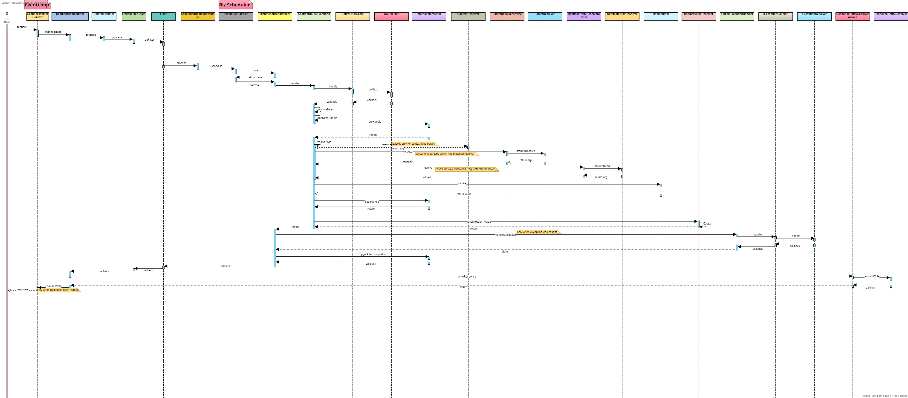
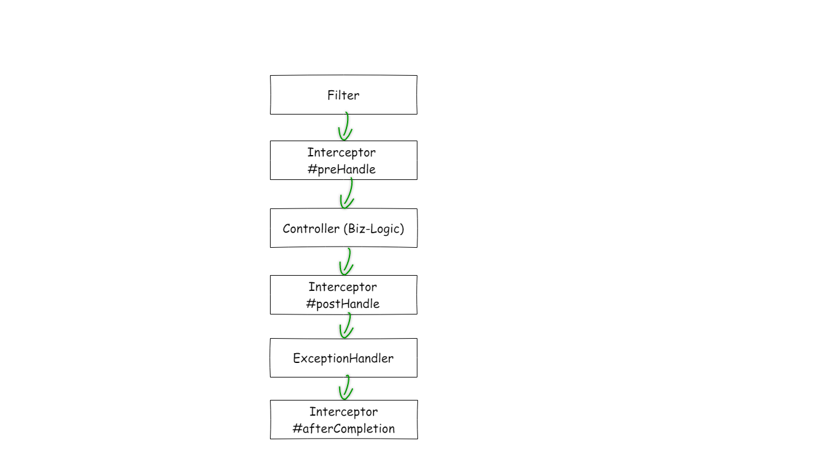

This is the multi-page printable view of this section.
Click here to print.
Return to the regular view of this page.
ESA Restlight
ESA Restlight is a lightweight and rest-oriented web framework, which supports annotations of SpringMVC and JAX-RS.
Why Restlight?
In microservices, it is generally expected that service is a lightweight application, and the Spring-Web framework we often use is really a good framework that allows us to develop a variety of applications easily, but it is too bloated for applications in microservices, which just need a rest supports and do not need the session, ModelAndview, JSP and so on… Restlight aims to serve as a web framework that helps users to build a high performance and lightweight microservice.
What kind of web application is Restlight suitable for?
- Rest application
- High-performance requirements
- Middleware
- HTTP proxy
- Any application that needs HTTP services
What kind of web application is Restlight not suitable for?
- All in one application
- Servlet requirements: Restlight does not support servlet standards
Env Requirements
| Name |
Version |
| Java |
JDK8+ |
| Spring Boot |
2.1.0.RELEASE+ |
| Netty |
4.1.52.Final+ |
| Tcnative |
2.0.34.Final+ and matches with Netty |
Features
- Annotations of SpringMVC and JAX-RS supports
- High performance
- Reactive：
CompletableFuture、ListenableFuture(Guava).
- Threading-model: Flexible scheduling between IO EventLoopGroup and Biz Schedulers.
- Http1/Http2/H2c/Https
- HAProxy
- Filter
- Interceptor
- JSR-303: hibernate-validator
- Self-protection: Connection creation limit, Cpu Load protection
- more …
Release Notes
Releases
1 - 新版说明
Restlight最新发布了V1.0.0版本，全面支持了JAX-RS3.0标准并在整体架构设计上和处理流程上做了部分优化，提供了更多丰富的功能和API。
Notification
Restlight1.0.0为不兼容的版本升级，如果你从其他版本升级到该版本可能会需要修改一定量的业务代码，具体包括：
- 包名修改：之前
esa.restlight开头的包将统一以io.esastack.restlight开头
- 修改自定义
ArgumentResolver相关的实现，包括：ArgumentResolver、ArgumentResolverAdapter、ArgumentResolverFactory
、ArgumentResolverAdvice、ArgumentResolverAdviceAdapter、ArgumentResolverAdviceFactory等，最新用法请参考参数解析和ParamResolverAdvice
- 修改自定义
ReturnValueResolver相关的实现，包括：ReturnValueResolver、ReturnValueResolverAdapter、ReturnValueResolverFactory、ReturnValueResolverAdvice、ReturnValueResolverAdviceAdapter、ReturnValueResolverAdviceFactory等，最新用法请参考返回值解析和ResponseEntityResolverAdvice
- 修改自定义拦截器，包括：
HandlerInterceptor、Interceptor、InterceptorFactory、MappingInterceptor、RouteInterceptor等， 最新用法请参考拦截器
- 修改自定义
Filter，最新用法请参考：Filter
- 其它使用
AsyncRequest、AsyncResponse的地方，具体请参考术语
Q&A
Q：为何不能兼容之前的版本？
- 全面支持JAX-RS3.0的需要：
Restlight原有的请求处理流程和API设计无法满足JAX-RS3.0标准的需要，因此必须在框架核心逻辑上进行重新的设计和考量，而这势必导致接口无法完全向下兼容。
- 之前的设计已阻碍框架的进一步演进，比如：用户需要在自定义的异常处理器或过滤器中返回指定的entity、快速失败后返回自定义entity等功能就无法实现，因为响应entity的序列化时机和接口API设计上都存在局限性，以至于在不进行重新设计的情况下永远无法实现该功能。
- 接口易用性和可理解性的需要。
Q：升级成本高，可以不升级吗？
- 当然可以，之前版本已经比较稳定，如果出现重大bug我们会在原有版本上及时修复，保证0.x版本在生产环境稳定运行。
Feature
Fix
Optimization
2 - Getting Started
It’s very easy to get started with Restlight!
Create a Spring Boot application and add dependency
Note：netty 4.1.56.Final and tcnative 2.0.35.Final are directly dependent on.
Note: Please make sure the version of tcnative matches the version of netty.
<dependency>
<groupId>io.esastack</groupId>
<artifactId>restlight-starter</artifactId>
<version>${mvn.version}</version>
</dependency>
<dependency>
<groupId>io.esastack</groupId>
<artifactId>commons</artifactId>
// ${commons.version} >= 0.2.0
<version>${commons.version}</version>
</dependency>
Write your Controller
@RestController
@SpringBootApplication
public class RestlightDemoApplication {
@GetMapping("/hello")
public String hello() {
return "Hello Restlight!";
}
public static void main(String[] args) {
SpringApplication.run(RestlightDemoApplication.class, args);
}
}
Run your application and then you would see something like
Started Restlight server in 1265 millis on 0.0.0.0:8080
curl http://localhost:8080/hello
3 - Architecture
设计原则
功能架构
分层架构设计

架构图中ESA HttpServer, Restlight Server, Restlight Core, Restlight for Spring, Restlight Starter几个模块均可作为一个独立的模块使用， 满足不同场景下的需求。
请求处理时序图

ESA HttpServer
基于Netty 实现的一个简易的HttpServer， 支持Http1.1/Http2以及Https等
Tip
适合各类框架，中间件等基础组建中启动或期望使用代码显示启动HttpServer的场景
Restlight Core
在ESA HttpServer之上， 引入了业务线程池、Filter、路由等并支持了以Controller方式（在Controller类中通过诸如@RequestMappng等注解的方式构造请求处理逻辑）完成业务逻辑以及诸多常用功能
- 引入业务线程池
Filter- 请求路由（根据url, method, header等条件将请求路由到对应的Handler）
- 基于
CompletionStage的响应式编程支持
- 线程调度
HandlerInterceptor: 拦截器ExceptionHandler: 全局异常处理器BeanValidation: 参数校验ArgumentResolver: 参数解析扩展ReturnValueResolver: 返回值解析扩展RequestSerializer: 请求序列化器（通常负责反序列化Body内容）ResposneSerializer: 响应序列化器（通常负责序列化响应对象到Body）- 内置
Jackson, Fastjson, Gson, ProtoBuf序列化支持
- …
对应启动入口类io.esastack.restlight.core.Restlight
Tip
适合各类框架，中间件等基础组建中启动或期望使用代码显示启动HttpServer的场景
Restlight SpringMVC & Restlight JAX-RS
-
Restlight SpringMVC对SpringMVC中的注解使用习惯的Restlight Core的扩展实现（@RequestMapping, @RequestParam等）。
-
Restlight JAX-RS对JAX-RS中的注解使用习惯的Restlight Core的扩展实现（@Path, @GET, @QueryParam等）。
Restlight for Spring
在Restlight Core基础上支持在Spring场景下通过ApplicationContext容器自动配置各种内容（RestlightOptions, 从容器中自动配置Filter, Controller, ControllerAdvice等）
Tip
适合Spring Boot场景
Restlight Starter
在Restlight for Spring基础上支持在Spring Boot场景的自动配置
Tip
适合Spring Boot场景
Restlight Actuator
在Restlight Starter基础上支持在Spring Boot Actuator原生各种Endpoints支持以及Restlight独有的Endpoints。
Tip
适合Spring Boot Actuator场景
4 - 线程模型

Restlight由于是使用Netty作为底层HttpServer的实现，因此图中沿用了部分EventLoop的概念，线程模型由了Acceptor，IO EventLoopGroup（IO线程池）以及Biz ThreadPool（业务线程池）组成。
Acceptor： 由1个线程组成的线程池， 负责监听本地端口并分发IO 事件。IO EventLoopGroup： 由多个线程组成，负责读写IO数据(对应图中的read()和write())以及HTTP协议的编解码和分发到业务线程池的工作。Biz Scheduler：负责执行真正的业务逻辑（大多为Controller中的业务处理，拦截器等）。Custom Scheduler: 自定义线程池
Tip
通过第三个线程池Biz Scheduler的加入完成IO操作与实际业务操作的异步（同时可通过Restlight的线程调度功能随意调度）
5 - Restlight Starter
Restlight Starter是在Restlight Spring 基础上封装的Spring Boot Starter，提供基于Spring Boot的自动配置
5.1 - Thread-Scheduling

线程调度允许用户根据需要随意制定Controller在IO线程上执行还是在Biz线程上执行还是在自定义线程上运行。
使用@Scheduled注解进行线程调度
eg.
在IO线程上执行
@Scheduled(Schedulers.IO)
@GetMapping("/foo")
public String io() {
// ....
return "";
}
在BIz线程上执行
// 在业务线程池中执行
@Scheduled(Schedulers.BIZ)
@GetMapping("/bar")
public String biz() {
// ....
return "";
}
不加注解默认Scheduler上执行
@GetMapping("/baz")
public String bizBatching() {
// ....
return "";
}
自定义Scheduler
将Scheduler实现注入Spring
@Bean
public Scheduler scheduler() {
return Schedulers.fromExecutor("foo", Executors.newCachedThreadPool());
}
在自定义Scheduler上执行
// 在业务线程池中执行
@Scheduled("foo")
@GetMapping("/foo")
public String foo() {
// ....
return "";
}
Tip
- 自定义
Scheduler时请勿使用IO, BIZ, Restlight等作为name（作为Restlight中Scheduler的保留字)
- 定义线程池建议使用
RestlightThreadFactory以获得更高的性能
Warning
基于ThreadPoolExecutor类型自定义Scheduler时， 不管是否设置RejectExecutionHandler，Restlight都会覆盖ThreadPoolExecutor中的RejectExecutionHandler， 即不允许用户自定义实现RejectExecutionHandler实现拒绝策略（因为Restlight需要保证每个请求都能被正确的完成，否则可能会导致链接等资源无法被释放等问题）， 相反如果自定义实现Scheduler时请保证每个请求都被正确的完成。
配置
所有配置均以restlight.server.scheduling开头
| 配置项 |
默认 |
说明 |
| default-scheduler |
BIZ |
在不加@Scheduled注解时采用的Scheduler |
5.2 - Filter
Filter在接收到完整请求之后，路由匹配开始之前执行。
基本使用
@Bean
public Filter addHeaderFilter() {
return new Filter() {
@Override
public CompletionStage<Void> doFilter(FilterContext context, FilterChain chain) {
context.request().headers().set("foo", "bar");
return chain.doFilter(context);
}
};
}
Note
自定义FilterFactory将其注入Spring容器或者配置成可以被SPI加载的方式也可以实现Filter注入。
上面的例子将会给所有到来的请求都加上一个固定的Header。
异步Filter
@Bean
public Filter filter() {
return new Filter() {
@Override
public CompletionStage<Void> doFilter(FilterContext context, FilterChain chain) {
return CompletableFuture.runAsync(() -> {
// do something...
}).thenCompose(r -> {
// invoke next filter
return chain.doFilter(context);
});
}
};
}
上面的例子演示了在doFilter(xxx)中进行异步操作，并在该操作完成后回调FilterChain继续执行后续操作。
Tip
上面演示的异步只是开了一个新的线程， 实际场景中可使用Netty等实现更优雅的异步方式。
终止Filter的执行
当不期望执行后续的Filter时可返回一个CompletableFuture.completedFuture(null)实例。
@Override
public CompletableFuture<Void> doFilter(FilterContext context, FilterChain chain) {
return CompletableFuture.completedFuture(null);
}
Warning
doFilter(xxx)请勿返回null- 所有方法都将会在IO线程上调用，尽量不要阻塞， 否则将对性能会有较大的影响。
5.3 - RouteFilter
RouteFilter在路由匹配成功后执行。
基本使用
@Bean
public RouteFilter addHeaderFilter() {
return new RouteFilter() {
@Override
public CompletionStage<Void> routed(HandlerMapping mapping, RouteContext context, RouteFilterChain next) {
String handleName;
if ((handleName = mapping.methodInfo().handlerMethod().method().getName()).equals("get")) {
context.request().headers().set("handlerName", handleName);
}
return next.doNext(mapping, context);
}
};
}
上面的例子将会在路由匹配完成后，对所有Handler方法名称为get的方法的请求都加上一个固定的Header。
Note
自定义RouteFilterFactory将其注入Spring容器或者配置成可以被SPI加载的方式也可以实现RouteFilter注入。
异步RouteFilter
@Bean
public RouteFilter routeFilter() {
return new RouteFilter() {
@Override
public CompletionStage<Void> routed(HandlerMapping mapping, RouteContext context, RouteFilterChain next) {
return CompletableFuture.runAsync(() -> {
// do something...
}).thenCompose(r -> {
// invoke next filter
return next.doNext(mapping, context);
});
}
};
}
上面的例子演示了在routed(xxx, xxx)中进行异步操作，并在该操作完成后回调RouteFilterChain继续执行后续操作。
Tip
上面演示的异步只是开了一个新的线程， 实际场景中可使用BIZ Scheduler等实现更优雅的异步方式。
终止RouteFilter的执行
当不期望执行后续的RouteFilter时可返回一个CompletableFuture.completedFuture(null)实例。
@Override
public CompletionStage<Void> routed(HandlerMapping mapping, RouteContext context, RouteFilterChain next) {
return CompletableFuture.completedFuture(null);
}
5.4 - 拦截器
Restlight支持多种拦截器，适用于不同性能/功能场景
- RouteInterceptor
- MappingInterceptor
- HandlerInterceptor
- InterceptorFactory
Tip
实现对应的拦截器接口并注入Spring即可
Note
在Interceptor#preHandle0()和Interceptor#postHandle0()中直接通过throw抛出的异常将不会被
异常处理器处理，如果需要被正常处理，请使用CompletableFuture.completeExceptionally()封装异常
拦截器定位
面向Controller/Route， 同时支持按需匹配的拦截器
- 面向
Controller/Route: 拦截器一定能让用户根据需求选择匹配到哪个Controller接口
- 按需匹配： 支持按照
RequestContext条件让用户灵活决定拦截器的匹配规则
InternalInterceptor
核心拦截器实现， 封装了拦截器核心行为
-
CompletableFuture<Boolean> preHandle0(RequestContext, Object)
Controller执行前执行。返回布尔值表示是否允许当前请求继续往下执行。
-
CompletableFuture<Void> postHandle0(RequestContext, Object)
Controller刚执行完之后执行
-
CompletableFuture<Void> afterCompletion0(RequestContext, Object, Exception)
请求行完之后执行
-
int getOrder()
返回当前拦截器的优先级（默认为最低优先级），我们保证getOrder返回值决定拦截器的执行顺序，但是不支持使用@Order(int)注解情况下的顺序（虽然有时候看似顺序和@Order一致，但那只是巧合）。
Note
- 框架在真正执行拦截器调用的时候只会调用上述方法(而不是
preHandle(xxx), postHandle(xxx), afterCompletion(xxx))
- 请勿直接使用此接口，此接口仅仅是拦截器的核心实现类
拦截器匹配
初始化阶段： 初始化阶段为每一个Controller确定所有可能匹配到当前Controller的拦截器列表（包含可能匹配以及一定会匹配到当前Controller的拦截器）。
运行时阶段： 一个请求到来时通过将RequestContext作为参数传递到拦截器做路由判定，决定是否匹配。
Tip
通过初始化与运行时两个阶段的匹配行为扩展满足用户多样性匹配需求， 用户既可以直接将拦截器绑定到固定的Controller也可以让拦截器随心所欲的根据请求去选择匹配。
Affinity亲和性
public interface Affinity {
/**
* Current component is always attaching with the target subject.
*/
int ATTACHED = 0;
/**
* Current component has a high affinity with the target subject this is the highest value.
*/
int HIGHEST = 1;
/**
* Current component has no affinity with the target subject.
*/
int DETACHED = -1;
/**
* Gets the affinity value.
*
* @return affinity.
*/
int affinity();
}
用于表达拦截器与Controller/Route之间的亲和性
affinity()小于0表示拦截器不可能与Controller匹配affinity()等于0表示拦截器一定会与Controller匹配affinity()大于0表示拦截器可能会与Controller匹配， 并且值越小匹配可能性越高（因此1为最高可能性）， 相反值越大匹配可能性越小， 同时匹配的开销越大（用于拦截器匹配性能优化）。
InterceptorPredicate
public interface InterceptorPredicate extends RequestPredicate {
InterceptorPredicate ALWAYS = context -> Boolean.TRUE;
}
public interface RequestPredicate extends Predicate<RequestContext> {
// ignore this
default boolean mayAmbiguousWith(RequestPredicate another) {
return false;
}
}
test(RequestContext)方法用于对每个请求的匹配。可以满足根据RequestContext运行时的任意条件的匹配（而不仅仅是局限于URL匹配）
Interceptor
Interceptor接口为同时拥有Affinity（Controller/Route匹配）以及InterceptorPredicate（请求RequestContext匹配）的接口
public interface Interceptor extends InternalInterceptor, Affinity {
/**
* Gets the predicate of current interceptor. determines whether current interceptor should be matched to a {@link
* RequestContext}.
*
* @return predicate, or {@code null} if {@link #affinity()} return's a negative value.
*/
InterceptorPredicate predicate();
/**
* Default to highest affinity.
* <p>
* Whether a {@link Interceptor} should be matched to a {@link Route} is depends on it.
*
* @return affinity
*/
@Override
default int affinity() {
return HIGHEST;
}
}
由于int affinity()根据不同的Controller/Route可能得出不同的结果， 因此需要使用InterceptorFactory进行创建
eg.
实现一个拦截器， 拦截所有GET接口（仅包含GET）且Header中包含X-Foo请求头的请求
@Bean
public InterceptorFactory interceptor() {
return (ctx, route) -> Optional.of(new Interceptor() {
@Override
public CompletionStage<Boolean> preHandle0(RequestContext context, Object handler) {
// biz logic
return CompletableFuture.completedFuture(true);
}
@Override
public InterceptorPredicate predicate() {
return context -> context.request().headers().contains("X-Foo");
}
@Override
public int affinity() {
HttpMethod[] method = route.mapping().method();
if (method.length == 1 && method[0] == HttpMethod.GET) {
return ATTACHED;
}
return DETACHED;
}
});
}
Note
运行时仅在context.request().headers().contains("X-Foo")上做匹配， 性能损耗极低。
RouteInterceptor
只绑定到固定的Controller/Route的拦截器
public interface RouteInterceptor extends InternalInterceptor {
/**
* Gets the affinity value between current interceptor and the given {@link Routing}.
*
* @param ctx context
* @param route route to match
*
* @return affinity value.
*/
boolean match(DeployContext ctx, Routing route);
}
Tip
运行时无性能损耗， 用于需要将拦截器固定的绑定到Controller的场景， 这里的boolean match(xx)方法返回的true和false实际上相当于Affinity接口返回Affinity.ATTACHED以及Affinity.DETACHED（即只有一定匹配和一定不匹配）
eg.
实现一个拦截器， 拦截所有GET请求（仅包含GET）
@Bean
public RouteInterceptor interceptor() {
return new RouteInterceptor() {
@Override
public boolean match(DeployContext ctx, Routing route) {
HttpMethod[] method = route.mapping().method();
return method.length == 1 && method[0] == HttpMethod.GET;
}
@Override
public CompletionStage<Boolean> preHandle0(RequestContext context, Object handler) {
// biz logic
return CompletableFuture.completedFuture(true);
}};
}
MappingInterceptor
绑定到所有Controller/Route， 并匹配请求的拦截器
public interface MappingInterceptor extends InternalInterceptor, InterceptorPredicate {
}
相当于affinity()固定返回Affinity.ATTACHED
eg.
实现一个拦截器， 拦截所有Header中包含X-Foo请求头的请求
@Bean
public MappingInterceptor interceptor() {
return new MappingInterceptor() {
@Override
public CompletionStage<Boolean> preHandle0(RequestContext context, Object handler) {
// biz logic
return CompletableFuture.completedFuture(true);
}
@Override
public boolean test(RequestContext context) {
return context.request().headers().contains("X-Foo");
}
};
}
HandlerInterceptor
支持基于URI匹配的拦截器接口
includes(): 指定拦截器作用范围的Path， 默认作用于所有请求。excludes(): 指定拦截器排除的Path（优先级高于includes）默认为空。
public interface HandlerInterceptor extends InternalInterceptor {
String PATTERN_FOR_ALL = "/**";
default String[] includes() {
return null;
}
default String[] excludes() {
return null;
}
}
Warning
涉及到正则匹配， 会有较大性能损失， 且仅支持URI匹配。
eg.
实现一个拦截器， 拦截除/foo/bar意外所有/foo/开头的请求
@Bean
public HandlerInterceptor interceptor() {
return new HandlerInterceptor() {
@Override
public CompletionStage<Boolean> preHandle0(RequestContext context, Object handler) {
// biz logic
return CompletableFuture.completedFuture(true);
}
@Override
public String[] includes() {
return new String[] {"/foo/**"};
}
@Override
public String[] excludes() {
return new String[] {"/foo/bar"};
}
};
}
InterceptorFactory
拦截器工厂类， 用于为每一个Controller/Route生成一个Interceptor
public interface InterceptorFactory {
/**
* Create an instance of {@link Interceptor} for given target handler before starting Restlight server..
*
* @param ctx deploy context
*
* @param route target route.
* @return interceptor
*/
Optional<Interceptor> create(DeployContext ctx, Routing route);
}
5.5 - 异常处理
Spring MVC异常处理
Restlight for Spring MVC支持使用Spring MVC中的@ExceptionHandler, @ControllerAdvice等注解，并且对此能力进行了增强
参考ExceptionHandler支持
Note
仅在项目引入了restlight-springmvc-provider依赖的情况下使用（默认引入）
ExceptionResolver
eg.
处理RuntimeException
@Component
public class GlobalExceptionResolver implements ExceptionResolver<RuntimeException> {
@Override
public CompletionStage<Void> handleException(RequestContext context, RuntimeException e) {
// handle exception here
return CompletableFuture.completedFuture(null);
}
}
Tip
处理不同异常类型实现不同的ExceptionResolver<T extends Throwable>
5.6 - 参数解析
参数解析指从请求中解析出Controller参数值的过程（不包含请求实体数据的解析）
典型的有
@RequestParam@RequestHeader@PathVariable@CookieValue@MatrixVariable@QueryBeanRequestContextHttpRequestHttpResponse
接口定义
public interface ParamResolver extends Resolver {
/**
* Resolves method parameter into an argument value.
*
* @param context context
* @return value resolved
* @throws Exception ex
*/
Object resolve(RequestContext context) throws Exception;
}
框架会在启动的初始化阶段试图为每一个Controller中的每一个参数都找到一个与之匹配的ParamResolver用于请求的参数解析。
框架如何确定ParamResolver
ParamResolverAdapter
public interface ParamPredicate {
/**
* Whether current {@link ParamResolver} implementation is support given parameter.
*
* @param param param
* @return {@code true} if it supports
*/
boolean supports(Param param);
}
public interface ParamResolverAdapter extends ParamPredicate, ParamResolver, Ordered {
@Override
default int getOrder() {
return HIGHEST_PRECEDENCE;
}
}
初始化逻辑：
- 按照
getOrder()方法的返回将Spring容器中所有的ParamResolver进行排序
- 按照排序后的顺序依次调用
supports(Param param)方法， 返回true则将其作为该参数的ParamResolver，运行时每次请求都将调用resolve(RequestContext context)方法进行参数解析，并且运行时不会改变。
- 未找到则启动报错。
细心的人可能会发现该设计可能并不能覆盖到以下场景
- 因为
resolve(RequestContext context)方法参数中并没有传递Param参数， 虽然初始化阶段能根据supports(Param param)方法获取参数元数据信息（获取某个注解，获取参数类型等等）判断是否支持，但是如果运行时也需要获取参数的元数据信息（某个注解的值等）的话，此接口则无法满足需求。
- 假如
ParamResolver实现中需要做序列化操作， 因此期望获取到Spring容器中的序列化器时，则该接口无法支持。
针对此问题，答案是确实无法支持。因为Restlight的设计理念是
因此不期望用户以及Restlight的开发人员大量的在运行时去频繁获取一些JVM启动后就不会变动的内容(如： 注解的值)，甚至针对某些元数据信息使用ConcurrentHashMap进行缓存（看似是为了提高性能的缓存，实际上初始化就固定了的内容反而增加了并发性能的损耗）。
基于以上原因我们提供了另一个ParamResolver的实现方式
ParamResolverFactory
public interface ParamResolverFactory extends ParamPredicate, Ordered {
ParamResolver createResolver(Param param,
StringConverterProvider converters,
List<? extends HttpRequestSerializer> serializers);
@Override
default int getOrder() {
return HIGHEST_PRECEDENCE;
}
}
与上面的ParamResolver类似
初始化逻辑：
- 按照
getOrder()方法的返回将所有的ParamResolverFactory进行排序
- 按照排序后的顺序依次调用
supports(Param param)方法，返回true则将其作为该参数的ParamResolverFactory，同时调用createResolver(Param param, StringConverterProvider converters, List<? extends HttpRequestSerializer> serializers)方法创建出对应的ParamResolver
- 未找到则启动报错。
由于初始化时通过createResolver(Param param, StringConverterProvider converters, List<? extends HttpRequestSerializer> serializers)方法传入了Param以及序列化器，因此能满足上面的要求。
两种模式的定位
ParamResolver： 适用于参数解析器不依赖方法元数据信息以及序列化的场景。例如： 如果参数上使用了@XXX注解则返回某个固定的值。ParamResolverFactory： 适用于参数解析器依赖方法元数据信息以及序列化的场景。例如： @RequestParameter(name = "foo")。
自定义参数解析器
将自定义实现的ParamResolverAdapter或者ParamResolverFactory注入到Spring容器即可。
场景： 当参数上有@AppId注解时， 使用固定的AppId
// 自定义注解
@Target(ElementType.PARAMETER)
@Retention(RetentionPolicy.RUNTIME)
@Documented
public @interface AppId {
}
@Bean
public ParamResolver resolver() {
return new ParamResolverAdapter() {
@Override
public boolean supports(Param param) {
// 当方法上有此注解时生效
return param.hasAnnotation(AppId.class);
}
@Override
public Object resolve(RequestContext context) {
return "your appid";
}
};
}
controller使用
@GetMapping("/foo")
public String foo(@AppId String appId) {
return appId;
}
上面的代码自定义实现了依据自定义注解获取固定appId的功能
Note
自定义ParamResolverAdapter比框架自带的优先级高（如@RequestHeader，@RequestParam等），如果匹配上了自定义实现，框架默认的功能在当前参数上将不生效。
场景： 通过自定义注解获取固定前缀x-custom的Header
// 自定义注解
@Target(ElementType.PARAMETER)
@Retention(RetentionPolicy.RUNTIME)
@Documented
public @interface CustomHeader {
String value();
}
@Bean
public ParamResolverFactory resolver() {
return new ParamResolverFactory() {
@Override
public ParamResolver createResolver(Param param,
StringConverterProvider converters,
List<? extends HttpRequestSerializer> serializers) {
return new Resolver(param);
}
@Override
public boolean supports(Param param) {
// 当方法上有此注解时生效
return param.hasAnnotation(CustomHeader.class);
}
};
}
/**
* 实际ParamResolver实现
*/
private static class Resolver implements ParamResolver {
private final String headerName;
private Resolver(Param param) {
CustomHeader anno = param.getAnnotation(CustomHeader.class);
if (anno.value().length() == 0) {
throw new IllegalArgumentException("Name of header must not be empty.");
}
// 初始化时组装好需要的参数
this.headerName = "x-custom" + anno.value();
}
@Override
public Object resolve(RequestContext context) {
// 运行时直接获取Header
return context.request().headers().get(headerName);
}
}
controller使用
@GetMapping("/foo")
public String foo(@CustomHeader("foo") String foo) {
return foo;
}
Note
自定义ParamResolverFactory比框架自带的优先级高（如@RequestHeader，@RequestParam等）， 如果匹配上了自定义实现，框架默认的功能在当前参数上将不生效。
5.7 - ParamResolverAdvice
ParamResolverAdvice允许用户在ParamResolver参数解析器解析参数的前后添加业务逻辑以及修改解析后的参数。
接口定义
public interface ParamResolverAdvice {
/**
* This method is called around {@link ParamResolver#resolve(RequestContext)}.
*
* @param context context
* @return resolved arg value
* @throws Exception exception
*/
Object aroundResolve(ParamResolverContext context) throws Exception;
}
自定义ParamResolverAdvice
与ParamResolver相同，ParamResolverAdvice自定应时同样需要实现ParamResolverAdviceAdapter或ParamResolverAdviceFactory接口
方式1：实现 ParamResolverAdviceAdapter
接口定义
public interface ParamResolverAdviceAdapter extends ParamPredicate, ParamResolverAdvice, Ordered {
@Override
default int getOrder() {
return Ordered.HIGHEST_PRECEDENCE;
}
}
方式2：实现ParamResolverAdviceFactory
接口定义
public interface ParamResolverAdviceFactory extends ParamPredicate, Ordered {
/**
* Creates an instance of {@link ParamResolverAdvice} for given handler method.
*
* @param param method
* @param resolver paramResolver associated with this parameter
* @return advice
*/
ParamResolverAdvice createResolverAdvice(Param param, ParamResolver resolver);
}
ParamResolverAdviceAdapter接口以及ParamResolverAdviceFactory接口与ParamResolver中的ParamResolverAdapter接口以及ParamResolverFactory接口的使用方式相同，这里不过多赘述。
Note
ParamResolverAdvice与ParamResolver生命周期是相同的, 即应用初始化的时候便会决定每个参数的ParamResolverAdvice
5.8 - 请求实体数据解析
请求实体数据解析指将请求body的内容反序列化并解析出Controller参数值的过程。
典型的有
接口定义
public interface RequestEntityResolver extends Resolver {
/**
* Deserialize the given {@code entity} to result.
*
* @param entity entity
* @param context context
* @return resolved value, which must not be null.
* @throws Exception any exception
*/
HandledValue<Object> readFrom(RequestEntity entity, RequestContext context) throws Exception;
}
框架会在启动的初始化阶段试图为每一个Controller中的每一个参数都找到一个与之匹配的RequestEntityResolver用于请求的参数解析。
框架如何确定RequestEntityResolver
Note
框架在初始化阶段会预先通过ParamPredicate#supports(Param param)来确定一组可以用来处理给定方法参数的RequestEntityResolver
并进行排序，在运行过程中仍可在执行RequestEntityResolver#readFrom(RequestEntity entity, RequestContext context)
过程中再次进行判断，如果当前RequestEntityResolver不支持处理当前请求的实体内容解析，则可以直接返回HandledValue.failed()，框架将继续尝试下一个优先级的
RequestEntityResolver，直至遍历完所有跟当前方法绑定的RequestEntityResolver。
需要说明地是：1.大部分场景下在初始化阶段绑定到Param上的RequestEntityResolver在运行时均不需要再次进行判断，
可以直接进行处理（这也是框架默认的行为），只有在特殊的场景下，请求执行过程中参数的改变将影响到请求实体内容解析逻辑的时候才需要在
实际处理过程中进行二次匹配，比如JAX-RS标准中定义的行为。2.下文所展示的均为初始化绑定的使用方式。
RequestEntityResolverAdapter
public interface ParamPredicate {
/**
* Whether current {@link ParamResolver} implementation is support given parameter.
*
* @param param param
* @return {@code true} if it supports
*/
boolean supports(Param param);
}
public interface RequestEntityResolverAdapter extends RequestEntityResolver, ParamPredicate, Ordered {
@Override
default int getOrder() {
return Ordered.HIGHEST_PRECEDENCE;
}
}
初始化逻辑：
- 按照
getOrder()方法的返回将Spring容器中所有的RequestEntityResolver进行排序
- 按照排序后的顺序依次调用
supports(Param param)方法， 返回true则将其作为该参数的RequestEntityResolver，运行时每次请求都将按优先级顺序调用readFrom(RequestEntity entity, RequestContext context)方法进行参数解析，直至处理成功。
- 未找到则启动报错。
Note
- 如果需要解析其他
Controller参数请求参考参数解析
细心的人可能会发现该设计可能并不能覆盖到以下场景
- 因为
readFrom(RequestEntity entity, RequestContext context)方法参数中并没有传递Param参数， 虽然初始化阶段能根据supports(Param param)方法获取参数元数据信息（获取某个注解，获取参数类型等等）判断是否支持，但是如果运行时也需要获取参数的元数据信息（某个注解的值等）的话，此接口则无法满足需求。
- 假如
RequestEntityResolver实现中需要做序列化操作， 因此期望获取到Spring容器中的序列化器时，则该接口无法支持。
针对此问题，答案是确实无法支持。因为Restlight的设计理念是
因此不期望用户以及Restlight的开发人员大量的在运行时去频繁获取一些JVM启动后就不会变动的内容(如： 注解的值)，甚至针对某些元数据信息使用ConcurrentHashMap进行缓存（看似是为了提高性能的缓存，实际上初始化就固定了的内容反而增加了并发性能的损耗）。
基于以上原因我们提供了另一个RequestEntityResolver的实现方式
ParamResolverFactory
public interface RequestEntityResolverFactory extends ParamPredicate, Ordered {
RequestEntityResolver createResolver(Param param,
StringConverterProvider converters,
List<? extends HttpRequestSerializer> serializers);
@Override
default int getOrder() {
return HIGHEST_PRECEDENCE;
}
}
与上面的RequestEntityResolver类似
初始化逻辑：
- 按照
getOrder()方法的返回将所有的RequestEntityResolverFactory进行排序
- 按照排序后的顺序依次调用
supports(Param param)方法，返回true则将其作为该参数的RequestEntityResolverFactory，同时调用createResolver(Param param, List<? extends HttpRequestSerializer> serializers)方法创建出对应的RequestEntityResolver
- 未找到则启动报错。
由于初始化时通过createResolver(Param param, List<? extends HttpRequestSerializer> serializers)方法传入了Param以及序列化器，因此能满足上面的要求。
两种模式的定位
RequestEntityResolver： 适用于参数解析器不依赖方法元数据信息以及序列化的场景。例如： 如果参数上使用了@XXX注解则返回某个固定的值。RequestEntityResolverFactory： 适用于参数解析器依赖方法元数据信息以及序列化的场景。
自定义参数解析器
将自定义实现的RequestEntityResolverAdapter或者RequestEntityResolverFactory注入到Spring容器即可。
RequestEntityResolverAdapter案例
场景： 当参数上有@Pojo注解时，使用固定的pojo
// 自定义注解
@Target(ElementType.PARAMETER)
@Retention(RetentionPolicy.RUNTIME)
@Documented
public @interface Pojo {
}
private static final Pojo pojo = new Pojo();
@Bean
public RequestEntityResolver resolver() {
return new RequestEntityResolverAdapter() {
@Override
public HandledValue<Object> readFrom(RequestEntity entity, RequestContext context) throws Exception {
return HandledValue.succeed(pojo);
}
@Override
public boolean supports(Param param) {
return param.hasAnnotation(Pojo.class);
}
};
}
controller使用
@GetMapping("/foo")
public Pojo foo(@Pojo Pojo pojo) {
return pojo;
}
上面的代码自定义实现了依据自定义注解获取固定Pojo的功能
Note
自定义RequestEntityResolverAdapter比框架自带的优先级高（如@RequestBody），如果匹配上了自定义实现，框架默认的功能在当前参数上将不生效。
RequestEntityResolverFactory
场景： 通过自定义注解解析请求实体数据并将将解析后的POJO的name设置为固定值。
// 自定义注解
@Target(ElementType.PARAMETER)
@Retention(RetentionPolicy.RUNTIME)
@Documented
public @interface CustomPojo {
String value();
}
@Bean
public RequestEntityResolverFactory resolver() {
return new RequestEntityResolverFactory() {
@Override
public RequestEntityResolver createResolver(Param param,
StringConverterProvider converters,
List<? extends HttpRequestSerializer> serializers) {
return new Resolver(param);
}
@Override
public boolean supports(Param param) {
// 当方法上有此注解时生效
return param.hasAnnotation(CustomPojo.class);
}
};
}
/**
* 实际RequestEntityResolver实现
*/
private static class Resolver implements RequestEntityResolver {
private final HttpRequestSerializer serializer;
private final String fixedName;
private Resolver(HttpRequestSerializer serializer, Param param) {
CustomPojo anno = param.getAnnotation(CustomPojo.class);
if (anno.value().length() == 0) {
throw new IllegalArgumentException("Name of header must not be empty.");
}
// 初始化时组装好需要的参数
this.fixedName = anno.value();
this.serializer = serializer;
}
@Override
public HandledValue<Object> readFrom(RequestEntity entity, RequestContext context) throws Exception {
HandledValue<Object> handled = serializer.deserialize(entity);
if (handled.isSuccess()) {
Pojo pojo = (Pojo) handled.value();
pojo.setName(fixedName);
}
return handled;
}
}
controller使用
@GetMapping("/foo")
public Pojo foo(@CustomPojo("foo") Pojo foo) {
return foo;
}
Note
自定义RequestEntityResolverFactory比框架自带的优先级高（如@RequestBody），如果匹配上了自定义实现，框架默认的功能在当前参数上将不生效。
5.9 - RequestResolverAdvice
RequestEntityResolverAdvice允许用户在RequestEntityResolver返回值处理的前后添加业务逻辑。
接口定义
public interface RequestEntityResolverAdvice {
/**
* This method will be called around
* {@link RequestEntityResolver#readFrom(RequestEntity, RequestContext)}.
*
* @param context context
* @return object resolved value
* @throws Exception exception
*/
Object aroundRead(RequestEntityResolverContext context) throws Exception;
}
自定义RequestEntityResolverAdvice
与RequestEntityResolver相同，RequestEntityResolverAdvice自定应时同样需要实现RequestEntityResolverAdviceAdapter或RequestEntityResolverAdviceFactory接口
方式1 实现RequestEntityResolverAdviceAdapter
接口定义
public interface RequestEntityResolverAdviceAdapter extends RequestEntityResolverAdvice,
ParamPredicate, Ordered {
@Override
default boolean supports(Param param) {
return true;
}
@Override
default int getOrder() {
return Ordered.HIGHEST_PRECEDENCE;
}
}
方式2：实现RequestEntityResolverAdviceFactory
接口定义
public interface RequestEntityResolverAdviceFactory extends ParamPredicate, Ordered {
/**
* 生成RequestEntityResolverAdvice
*/
RequestEntityResolverAdvice createResolverAdvice(Param param);
@Override
default int getOrder() {
return HIGHEST_PRECEDENCE;
}
}
RequestEntityResolverAdviceAdapter接口以及RequestEntityResolverAdviceFactory接口与RequestEntityResolver中的RequestEntityResolverAdapter接口以及RequestEntityResolverFactory接口的使用方式相同，这里不过多赘述。
5.10 - 返回值解析
返回值解析指将Controller返回值序列化并写入到HttpResponse中的过程。
返回值解析逻辑
Restlight默认支持的返回值解析方式包括
@ResponseBody@ResponseStatus- 普通类型(String, byte[], int 等)
与参数解析类似， 每个功能都对应了一个返回值解析器的实现。
接口定义
public interface ResponseEntityResolver {
/**
* 解析出对应返回值并通过channel写回
*/
HandledValue<Void> writeTo(ResponseEntity entity,
ResponseEntityChannel channel,
RequestContext context) throws Exception;
}
Tip
考虑到直接实现ResponseEntityResolver接口实现的复杂性，在实际使用时建议直接继承AbstractResponseEntityResolver类并重写
其中的模版方法serialize(ResponseEntity entity, List<MediaType> mediaTypes, RequestContext context)将返回值序列化成byte[]，
其余的操作由AbstractResponseEntityResolver自动完成，下文示例均采用该种方式。
框架会在启动的初始化阶段试图为每一个Controller中的每一个参数都找到一组与之匹配的ResponseEntityResolver用于响应的返回值解析。
框架如何确定ResponseEntityResolver
Note
框架在初始化阶段会预先通过HandlerPredicate#supports(HandlerMethod method)来确定一组可以用来处理给定方法返回值的ResponseEntityResolver
并进行排序，在运行过程中仍可在执行ResponseEntityResolver#writeTo(ResponseEntity entity, ResponseEntityChannel channel, RequestContext context)
过程中再次进行判断，如果当前ResponseEntityResolver不支持处理当前请求的返回值，则可以直接返回HandledValue.failed()，框架将继续尝试下一个优先级的
ResponseEntityResolver，直至遍历完所有跟当前方法绑定的ResponseEntityResolver。
需要说明地是：1.大部分场景下在初始化阶段绑定到HandlerMethod上的ResponseEntityResolver在运行时均不需要再次进行判断，
可以直接进行处理（这也是框架默认的行为），只有在特殊的场景下，请求执行过程中参数的改变将影响到返回值解析逻辑的时候才需要在
实际处理过程中进行二次匹配，比如JAX-RS标准中定义的行为。2.下文所展示的均为初始化绑定的使用方式。
ResponseEntityResolverAdapter
public interface HandlerPredicate {
/**
* 判断当前ResponseEntityResolver是否支持给定HandlerMethod解析
* 每一个Controller都对应一个HandlerMethod实例，
* 可以通过HandlerMethod获取注解, 返回值类型等各类反射相关的元数据信息
*/
boolean supports(HandlerMethod method);
}
public interface ResponseEntityResolverAdapter extends ResponseEntityResolver, HandlerPredicate, Ordered {
@Override
default int getOrder() {
return Ordered.HIGHEST_PRECEDENCE;
}
}
初始化逻辑：
- 按照
getOrder()方法的返回将Spring容器中所有的ResponseEntityResolverAdapter进行排序
- 按照排序后的顺序依次调用
supports(HandlerMethod method)方法， 返回true则将其作为该参数的ResponseEntityResolver，运行时每次请求都将按顺序调用writeTo(ResponseEntity entity, ResponseEntityChannel channel, RequestContext context)方法进行返回值处理，直至处理成功。
- 未找到则启动报错。
细心的人可能会发现该设计可能并不能覆盖到以下场景
- 因为
writeTo(ResponseEntity entity, ResponseEntityChannel channel, RequestContext context)方法参数中并没有传递HandlerMethod参数，虽然初始化阶段能根据HandlerMethod method方法获取Controller方法元数据信息（获取某个注解，获取参数类型等等）判断是否支持，但是如果运行时也需要获取Controller方法的元数据信息（某个注解的值等）的话，此接口则无法满足需求。
- 假如
ResponseEntityResolverAdapter实现中需要做序列化操作，因此期望获取到Spring容器中的序列化器时，则该接口无法支持。
针对以上问题， 答案是确实无法支持。因为Restlight的设计理念是
因此不期望用户以及Restlight的开发人员大量的在运行时去频繁获取一些JVM启动后就不会变动的内容(如： 注解的值)， 甚至针对某些元数据信息使用ConcurrentHashMap进行缓存（看似是为了提高性能的缓存， 实际上初始化就固定了的内容反而增加了并发性能的损耗）。
基于以上原因我们提供了另一个ResponseEntityResolver的实现方式
ResponseEntityResolverFactory
public interface ResponseEntityResolverFactory extends HandlerPredicate, Ordered {
ResponseEntityResolver createResolver(HandlerMethod method,
List<? extends HttpResponseSerializer> serializers);
@Override
default int getOrder() {
return HIGHEST_PRECEDENCE;
}
}
与上面的ResponseEntityResolver类似
初始化逻辑：
- 按照
getOrder()方法的返回将所有的ResponseEntityResolverFactory进行排序
- 按照排序后的顺序依次调用
supports(HandlerMethod method)方法，返回true则将其作为该参数的ResponseEntityResolverFactory，同时调用createResolver(HandlerMethod method, List<? extends HttpResponseSerializer> serializers)方法创建出对应的ResponseEntityResolver
- 未找到则启动报错。
由于初始化时通过createResolver(HandlerMethod method, List<? extends HttpResponseSerializer> serializers)方法传入了HandlerMethod以及序列化器，因此能满足上面的要求。
两种模式的定位
ResponseEntityResolver： 适用于解析器不依赖方法元数据信息以及序列化的场景。例如： 如果Controller方法上上使用了@XXX注解则返回某个固定的值。ResponseEntityResolverFactory： 适用于解析器依赖方法元数据信息以及序列化的场景。例如： @ResponseBody， @ResponseStatus(reason = “error”)。
自定义返回值解析器
将自定义实现的ResponseEntityResolverAdapter或者ResponseEntityResolverFactory注入到Spring容器即可。
ResponseEntityResolverAdapter案例
场景： 当Controller方法上有@AppId注解时， 返回固定的AppId
// 自定义注解
@Target(ElementType.METHOD)
@Retention(RetentionPolicy.RUNTIME)
@Documented
public @interface AppId {
}
@Bean
public ResponseEntityResolver resolver() {
private static byte[] APP_ID = "your appid".getBytes(StandardCharsets.UTF_8);
return new AbstractResponseEntityResolver() {
@Override
protected byte[] serialize(ResponseEntity entity,
List<MediaType> mediaTypes,
RequestContext context) {
return APP_ID;
}
@Override
public boolean supports(HandlerMethod method) {
// 当方法上有此注解时生效
return method.hasMethodAnnotation(AppId.class);
}
};
}
controller使用
@GetMapping("/foo")
@AppId
public String foo() {
return "";
}
上面的代码自定义实现了依据自定义注解获取固定appId的功能
Note
自定义ResponseEntityResolverAdapter比框架自带的优先级高（如@ResponseBody），如果匹配上了自定义实现，框架默认的功能在当前方法上上将不生效。
ResponseEntityResolverFactory
场景： 通过自定义注解对所有String类型的返回值加上一个指定前缀。
// 自定义注解
@Target(ElementType.METHOD)
@Retention(RetentionPolicy.RUNTIME)
@Documented
public @interface Suffix {
String value();
}
@Bean
public ResponseEntityResolverFactory resolver() {
return new ResponseEntityResolverFactory() {
@Override
public ResponseEntityResolver createResolver(HandlerMethod method,
List<? extends HttpResponseSerializer> serializers) {
return new Resovler(method);
}
@Override
public boolean supports(HandlerMethod method) {
return String.class.equals(method.method().getReturnType())
&& method.hasMethodAnnotation(CustomHeader.class, false);
}
};
}
/**
* 实际ResponseEntityResolver实现
*/
private static class Resolver extends AbstractResponseEntityResolver {
private final String suffix;
private Resolver(HandlerMethod method) {
// 获取前缀
Suffix anno = method.getMethodAnnotation(Suffix.class, false);
this.suffix = anno.value();
}
@Override
protected byte[] serialize(ResponseEntity entity,
List<MediaType> mediaTypes,
RequestContext context) {
// 拼接
return (suffix + entity.response().entity()).getBytes(StandardCharsets.UTF_8);
}
}
controller使用
@GetMapping("/foo")
@Suffix
public String foo() {
return "foo";
}
Note
自定义ResponseEntityResolverFactory比框架自带的优先级高（如@ResponseBody），如果匹配上了自定义实现，框架默认的功能在当前方法上上将不生效。
5.11 - ResponseResolverAdvice
ResponseEntityResolverAdvice允许用户在ResponseEntityResolver返回值处理的前后添加业务逻辑。
接口定义
public interface ResponseEntityResolverAdvice {
/**
* This method will be called around
* {@link ResponseEntityResolver#writeTo(ResponseEntity, ResponseEntityChannel, RequestContext)}.
*
* @param context context
* @throws Exception exception
*/
void aroundWrite(ResponseEntityResolverContext context) throws Exception;
}
自定义ResponseEntityResolverAdvice
与ResponseEntityResolver相同，ResponseEntityResolverAdvice自定应时同样需要实现ResponseEntityResolverAdviceAdapter或ResponseEntityResolverAdviceFactory接口
方式1 实现ResponseEntityResolverAdviceAdapter
接口定义
public interface ResponseEntityResolverAdviceAdapter
extends HandlerPredicate, ResponseEntityResolverAdvice, Ordered {
@Override
default boolean supports(HandlerMethod method) {
return true;
}
@Override
default int getOrder() {
return Ordered.HIGHEST_PRECEDENCE;
}
}
方式2：实现ResponseEntityResolverAdviceFactory
接口定义
public interface ResponseEntityResolverAdviceFactory extends ResponseEntityPredicate, Ordered {
/**
* 生成ResponseEntityResolverAdvice
*/
ResponseEntityResolverAdvice createResolverAdvice(HandlerMethod method);
@Override
default int getOrder() {
return HIGHEST_PRECEDENCE;
}
}
ResponseEntityResolverAdviceAdapter接口以及ResponseEntityResolverAdviceFactory接口与ResponseEntityResolver中的ResponseEntityResolverAdapter接口以及ResponseEntityResolverFactory接口的使用方式相同，这里不过多赘述。
5.12 - 序列化
序列化支持
- jackson(默认)
- fastjson
- Gson
- ProtoBuf
- 自定义支持
Note
其中Json相关的序列化方式默认配置了日期格式为yyyy-MM-dd HH:mm:ss
序列化切换
默认使用Jackson序列化，因此Restlight也默认引入了Jackson依赖，如果想要切换成别的序列化方式，则需要引入对应的Maven依赖并进行简单的配置。
Example：以切换Gson为例
- 引入Gson依赖：
<dependency>
<groupId>com.google.code.gson</groupId>
<artifactId>gson</artifactId>
<version>2.8.5</version>
</dependency>
- 注入Gson序列化器
@Bean
public HttpBodySerializer bodySerializer() {
return new GsonHttpBodySerializer();
}
完成切换。
Tip
如果不想继续引入默认的Jackson依赖可以使用<exclusions/>标签排除， 同时一旦注入了自定义的序列化器原来默认的Jackson序列化器将不会再生效
序列化器
接口标准定义
HttpRequestSerializer： 用于请求的反序列化。HttpResponseSerializer： 用于响应的序列化。HttpBodySerializer： 继承自HttpRequestSerializer以及HttpResponseSerializer, 可同时提供请求与响应的序列化功能。
内置的序列化器
FastJsonHttpBodySerializerJacksonHttpBodySerializerGsonHttpBodySerializerProtoBufHttpBodySerializer
Note
切换时引入Maven依赖并注入对应的序列化器即可
定制序列化器
可以选择通过继承或者自定义实现HttpRequestSerializer以及HttpResponseSerializer接口（或者HttpResponseSerializer同理）的方式实现定制序列化。
如，在上面的例子中我们切换序列化方式为jackson，此时我们想定制序列化的日期格式为yyyy-MM-dd
@Bean
public HttpBodySerializer bodySerializer() {
ObjectMapper objectMapper = new ObjectMapper();
objectMapper.setDateFormat(new SimpleDateFormat("yyyy-MM-dd"));
return new HttpJsonBodySerializerAdapter(new JacksonSerializer(objectMapper)) {};
}
同样也可以定制更多的序列化选项。
多个序列化器并存
Restlight并不像Spring MVC一样要求一个应用中只能使用一种序列化方式，Restlight允许多种序列化方式并存。
实际的服务中我们可能有这样的需求：我们对接服务A时使用的是ProtoBuf序列化，而其他情况都是使用的fastjson序列化。
配置如下：
@Bean
public HttpBodySerializer fastjsonBodySerializer() {
return new FastJsonHttpBodySerializer();
@Bean
public HttpBodySerializer protoBufBodySerializer() {
return new ProtoBufHttpBodySerializer();
}
直接注入两个序列化器即可。
上面的配置当MediaType（请求对应ContentType, 响应对应Accept）为application/json时使用JSON序列化, 为application/x-protobuf时使用ProtoBuf序列化.
兼容Spring Boot标准
使用Spring Boot时，经常在配置文件里面添加Jackson和Gson的配置，如：
spring.jackson.date-format=yyyy-MM-dd HH:mm:ss
spring.gson.date-format=yyyy-MM-dd HH:mm:ss
Restlight同样支持该标准，其作用逻辑如下图所示：
 如图所示，配置文件中Jackson和Gson相关内容要想生效，需要满足如下条件：
如图所示，配置文件中Jackson和Gson相关内容要想生效，需要满足如下条件：
- 用户没有手动定制HttpJsonBodySerializerAdapter
- 用户没有手动注入Jackson或者Gson序列化器(FastJsonHttpBodySerializer和GsonJsonHttpBodySerializer)
- 用户没有手动注入ObjectMapper或者Gson对象
- 配置文件有对Jackson和Gson进行配置
满足以上四个条件，配置文件中关于Jackson和Gson的配置，才会在对应的Jackson和Gson序列化器中生效。
响应序列化内容协商(Json与ProtoBuf序列化)
Note
前提： json和ProtoBuf的序列化器已经被正确的配置。
当 json和ProtoBuf的序列化器同时存在时， 响应序列化方式可以通过url中的参数来指定。
# 开启请求序列化协商
restlight.server.serialize.request.negotiation=true
# 开启响应序列化协商
restlight.server.serialize.response.negotiation=true
指定使用json序列化
eg: /foo/{bar}?format=json
指定使用protobuf序列化
eg: /foo/{bar}?format=pb
Note
参数可选值：json, pb
- 当参数
format与应用自身的某些接口中的参数冲突时可以通过配置修改参数名称
restlight.server.serialize.request.negotiation-param=your-param-name
restlight.server.serialize.response.negotiation-param=your-param-name
Tip
此种方式实际上相当于在请求的Accept字段中加入了application/json, application/x-protobuf值， 因此如果使用了自定义的序列化器，根据HttpResponseSerializer.supportsWrite(MediaType mediaType, Type type)方法实现不同可能与实际行为不符。 具体请参考下文多个序列化器框架如何选择使用哪个序列化器实现章节。
使用@RequestSerializer指定请求序列化器
当配置了多个序列化器时， 可以使用@RequestSerializer中指定使用某个固定的序列化方式
下面的Controller指定使用Jackson反序列化请求数据
@PostMapping("/foo")
public void bar(@RequestBody @RequestSerializer(JacksonHttpBodySerializer.class) User user) {
// ...
}
Tip
@RequestSerializer可以在Prameter, Method以及Class上使用， 优先级依次递减。
使用@ResponseSerializer指定响应序列化器
当配置了多个序列化器时， 可以使用@ResponseSerializer中指定使用某个固定的序列化方式
下面的Controller指定使用Jackson序列化响应结果
@PostMapping("/foo")
@ResponseSerializer(JacksonHttpBodySerializer.class)
public Foo bar() {
return new Foo();
}
Tip
@ResponseSerializer可以在Method以及Class上使用， 优先级依次递减。
使用@Serializer指定请求 & 响应序列化器
当配置了多个序列化器时， 可以使用@Serializer中指定使用某个固定的序列化方式， 相当于同时指定RequestSerializer以及@ResponseSerializer。
下面的Controller指定使用Jackson序列化
@PostMapping("/foo")
@Serializer(JacksonHttpBodySerializer.class)
public Foo bar(@RequestBody User user) {
return new Foo();
}
Tip
@ResponseSerializer可以在Method以及Class上使用， 优先级依次递减。
多个序列化器框架如何选择使用哪个序列化器实现？
public interface HttpRequestSerializer extends Ordered {
/**
* Deserialize the data from byte array to the object.
*
* @param entity entity
* @param <T> generic type
* @return handled value
* @throws Exception any exception
*/
<T> HandledValue<T> deserialize(RequestEntity entity) throws Exception;
}
如上，在进行序列化之前首先判断当前序列化器是否支持给定的RequestEntity，如果为false则直接返回HandledValue.failed()，否则返回反序列化后的结果。
同样HttpResponseSerializer
public interface HttpResponseSerializer extends Ordered {
/**
* Serialize the object to byte array.
*
* @param entity response entity
* @return handled value
* @throws Exception any exception
*/
HandledValue<byte[]> serialize(ResponseEntity entity) throws Exception;
}
序列化器实现本身具有优先级由getOrder()表示(值越低优先级越高)
当最终无法找到匹配的序列化器时， 会通过默认的优先级进行序列化（暂时仅响应序列化为此行为）。
@Bean
public HttpBodySerializer fastjsonBodySerializer() {
return new FastJsonHttpBodySerializer() {
@Override
public int getOrder() {
return 0;
}
};
@Bean
public HttpBodySerializer protoBufBodySerializer() {
return new ProtoBufHttpBodySerializer() {
@Override
public int getOrder() {
return 1;
}
};
}
多种序列化并存时的优先级
- 如果指定了
@RequestSerializer或者@Serializer中指定的序列化方式则使用该序列化方式
- 使用序列化协商中的参数指定的序列化器
- 根据
ContentType查找序列化器
- 未找到则报错
- 如果指定了
@ResponseSerializer或者@Serializer中指定的序列化方式则使用该序列化方式
- 使用序列化协商中的参数指定的序列化器
- 根据
Accept查找序列化器
- 根据
RequestMapping中produces指定的序列化器（未找到进入6）
- 未找到使用默认优先级最高的序列化器
ProtoBuf序列化支持
Restlight内置了ProtoBuf序列化器的实现，对应支持的MediaType为application/x-protobuf(需要请求的Content-Type为application/x-protobuf
同时使用ProtoBuf序列化器序列化后的响应结果的Content-Type也为application/x-protobuf)。
针对ProtoBuf序列化的特点，ProtoBuf序列化后还将增加Header， X-Protobuf-Schema和X-Protobuf-Message分别返回Message对象的getDescriptorForType().getFile().getName()和getDescriptorForType().getFullName的结果。
特殊类型返回值的序列化
不管Controller上是否加有@ResponseBody注解， 在使用序列化器序列化之前都将遵守以下原则
- 值为String类型直接返回该字符串结果。
- 值为byte[]类型直接将结果写入响应。
- 值为ByteBuf类型时直接将结果写入响应
- 以上均不符合则使用序列化器进行序列化。
- 如果Controlelr上未配置
@ResponseBody，值为基本类型或基本类型包装类将返回该类型的字符串结果（调用String.valueOf()）。
- 以上均不符合则抛异常。
5.13 - 请求参数聚合
支持将请求的参数聚合到Bean中
eg.
@GetMapping(value = "/test")
public String foo(@RequestBean Pojo Pojo) {
return "";
}
private static class Pojo {
@QueryParam("id")
private int id;
@HeaderParam("message")
private String message;
private AsyncRequest request;
private AsyncResponse response;
public int getId() {
return id;
}
//getter & setter
}
Note
由于SpringMVC的注解大多不支持在Field上使用， 因此仅支持JAX-RS注解以及自定义参数解析等场景。
5.14 - URL参数聚合
支持将Url中的参数与Form表单中的参数（仅当Content-Type为application/x-www-form-urlencoded时有效）聚合到Bean中。
eg：
请求 /test?id=1&msg=hello 中的id和message的值将绑定到pojo参数中
@GetMapping(value = "/test")
public String handle(@QueryBean Pojo Pojo) {
return "";
}
private static class Pojo {
private int id;
@QueryBean.Name("msg")
private String message;
public int getId() {
return id;
}
//getter & setter
}
Note
加了@QueryBean.Name(“name”)之后将使用提供的name作为参数名进行匹配， 原来的字段名字将不会使用
5.15 - Context Path
Restlight支持全局Path，使用时需要做如下配置：
restlight.server.context-path=/global-path/
原始Controller方法为：
@Controller
@RequestMapping("/restlight/employee/")
public class EmployeeController {
@GetMapping("/list")
@ResponseBody
public List<Employee> listAll() {
List<Employee> employeeList = new ArrayList<>(16);
employeeList.add(new Employee("LiMing", 25, "1403063"));
employeeList.add(new Employee("LiSi", 36, "1403064"));
employeeList.add(new Employee("WangWu", 31, "1403065"));
return employeeList;
}
}
使用全局Path后的请求路径为：/global-path/restlight/employee/list
Note
健康检查对应的请求路径不受全局Path影响
5.16 - Aware扩展
在Spring场景，Restlight支持通过xxxAware接口获取一些内部对象。
其中包含
RestlightBizExecutorAware: 获取业务线程池RestlightIoExecutorAware: 获取IO线程池RestlightServerAware: 获取RestlightServerRestlightDeployContextAware: 获取DeployContext
eg.
获取业务线程池
@Controller
public class HelloController implements RestlightBizExecutorAware {
private Executor bizExecutor;
@Override
public void setRestlightBizExecutor(Executor bizExecutor) {
this.bizExecutor = bizExecutor;
}
@GetMapping("/foo")
public CompletionStage<String> foo() {
return CompletableFuture.supplyAsync(() -> "Hello Restlight!", bizExecutor);
}
}
5.17 - 路由缓存
Spring MVC路由的痛点
传统的Spring MVC中， 当我们的@RequestMapping注解中包含了复杂任何的复杂匹配逻辑（这里的复杂逻辑可以理解为除了一个url对应一个controller实现，并且url中没有*, ? . {foo}等模式匹配的内容）时方能在路由阶段有相对较好的效果，反之如通常情况下一个请求的到来到路由到对应的controller实现这个过程将会是在当前应用中的所有Controller中遍历匹配，值得注意的是通常在微服务提倡RestFul设计的大环境下一个这种遍历几乎是无法避免的， 同时由于匹配的条件本身的复杂性（比如说正则本身为人诟病的就是性能），因此伴随而来的则是SpringMVC的路由的损耗非常的大。
Restlight路由缓存
设计原则
- 二八原则（80%的业务由20%的接口处理）
- 算法：类LFU(Least Frequently Used)算法
我们虽然不能改变路由条件匹配本身的损耗， 但是我们希望能做尽量少的匹配次数来达到优化的效果。因此采用常用的"缓存"来作为优化的手段。
当开启了路由缓存后，默认情况下将使用类LFU(Least Frequently Used)算法的方式缓存十分之的Controller，根据二八原则（80%的业务由20%的接口处理），大部分的请求都将在缓存中匹配成功并返回（这里框架默认的缓存十分之一，是相对比较保守的设置）
算法逻辑
当每次请求匹配成功时，会进行命中纪录的加1操作，并统计命中纪录最高的20%（可配）的Controller加入缓存， 每次请求的到来都将先从缓存中查找匹配的Controller（大部分的请求都将在此阶段返回）， 失败则进入正常匹配的逻辑。
什么时候更新缓存？ 我们不会在每次请求命中的情况下都去更新缓存，因为这涉及到一次排序（或者m次遍历， m为需要缓存的Controller的个数，相当于挑选出命中最高的m个controller）。 取而代之的是我们会以概率的方式去重新计算并更新缓存， 根据2-8原则通常情况下我们当前缓存的内存就是我们需要的内容， 所以没必要每次有请求命中都去重新计算并更新缓存， 因此我们会在请求命中的一定概率条件下采取做此操作（默认0.1%， 称之为计算概率）， 减小了并发损耗（这段逻辑本身基于CopyOnWrite， 并且为纯无锁并发编程，本身性能损耗就很低），同时此概率可配置可以根据具体的应用实际情况调整配置达到最优的效果。
配置建议
缓存比例：请求集中化比较高则设置更小（比如集中在1%的Controller上则可以设置为缓存1%）
计算率： 理论上设置的越高实时性越强（缓存更新频率越高）但是并发损耗也会升高，因此建议设置的相对小一些以应对激增的非常用请求即可。
Note
除极端情况下通常来说此缓存效果都会比原生的遍历实现要高效（这里指的是请求在Controller上的分布完全均匀）， 通常都能达到2-5倍的提升。
5.18 - 快速失败
Restlight 支持根据请求任务的排队时间快速失败。具体地，从接收到首字节（TTFB）或请求任务进入线程池开始排队时开始计时，
如果请求任务真正执行时的时间与起始时间的差值大于指定值（timeout），那么直接结束当前请求（返回500）。
使用时，需要配置timeout与起始时间（首字节时间或者开始排队时间，默认后者），示例如下：
restlight.server.scheduling.timeout.BIZ.type=QUEUED
restlight.server.scheduling.timeout.BIZ.time-millis=30
restlight.server.scheduling.timeout.IO.type=TTFB
restlight.server.scheduling.timeout.IO.time-millis=30
其中，BIZ和IO为Scheduler的名称，type为开始计时的方式，默认为QUEUED，
表示从请求任务进入线程池排队时开始计时，TTFB表示从接收到首字节时开始计时，time-millis
表示超时时间。
5.19 - Mock测试
同Spring MVC一样，Restlight也提供了单元测试的功能，用于构造请求并将请求映射到对应的Handler，得到Handler的执行结果并测试。如果您对Spring-Test不熟悉，请参考Spring-Testing。由于Restlight与Spring-web天生存在冲突，因此MockMvc的使用方式与Spring Mvc的略有差异，详情如下文所示。需要注意的是：
- 使用MockMvc及MockMvcBuilders时请正确引入restlight包下的，而不是spring-web测试包下的。
- 由于Restlight暂不支持RestTemplate，因此与该功能有关的测试同样暂不支持，如@AutoConfigureWebClient、@WebMvcTest等。
使用该功能需要额外引入如下依赖：
<dependency>
<groupId>org.springframework.boot</groupId>
<artifactId>spring-boot-starter-test</artifactId>
<scope>test</scope>
<version>${spring.boot.version}</version>
</dependency>
<dependency>
<groupId>io.esastack</groupId>
<artifactId>restlight-test-starter</artifactId>
<scope>test</scope>
<version>${restlight.version}</version>
</dependency>
1. 通过Context构造测试环境
该方式与Spring Mvc测试方式几乎无差异，需要注意的是：正确引入restlight包下的MockMvc及MockMvcBuilders。示例如下：
@RunWith(SpringRunner.class)
@SpringBootTest
public class BootstrapWithContextTest {
@Autowired
private ApplicationContext context;
private MockMvc mockMvc;
@Before
public void setUp() {
mockMvc = MockMvcBuilders.contextSetup(context);
}
@Test
public void testListAll() {
mockMvc.perform(MockHttpRequest.aMockRequest().withUri("/demo1/list").build())
.addExpect(r -> assertTrue(((List) r.response().entity()).isEmpty()))
.addExpect(r -> assertEquals(200, r.response().status()));
}
@Test
public void testListAll2() {
mockMvc.perform(MockHttpRequest.aMockRequest().withUri("/demo2/list").build())
.addExpect(r -> assertTrue(((List) r.response().entity()).isEmpty()))
.addExpect(r -> assertEquals(200, r.response().status()));
}
}
2. 通过Controller列表构造测试环境
该方式与Spring Mvc测试方式几乎无差异，需要注意的是：正确引入restlight包下的MockMvc及MockMvcBuilders。示例如下：
@RunWith(SpringRunner.class)
@SpringBootTest
public class BootstrapWithSingletonTest {
@Autowired
private DemoController1 demoController1;
@Autowired
private DemoController2 demoController2;
private MockMvc mockMvc;
@Before
public void setUp() {
mockMvc = MockMvcBuilders.standaloneSetup(demoController1, demoController2).build();
}
@Test
public void testListAll() {
mockMvc.perform(MockHttpRequest.aMockRequest().withUri("/demo1/list").build())
.addExpect(r -> assertTrue(((List) r.response().entity()).isEmpty()))
.addExpect(r -> assertEquals(200, r.response().status()));
}
@Test
public void testListAll2() {
mockMvc.perform(MockHttpRequest.aMockRequest().withUri("/demo2/list").build())
.addExpect(r -> assertTrue(((List) r.response().entity()).isEmpty()))
.addExpect(r -> assertEquals(200, r.response().status()));
}
}
3. 自动注入MockMvc
该方式与Spring Mvc测试方式几乎无差异，需要注意的是：正确引入restlight包下的MockMvc。示例如下：
@RunWith(SpringRunner.class)
@SpringBootTest
@AutoConfigureMockMvc
public class MockMvcAutowiredTest {
@Autowired
private MockMvc mockMvc;
@Test
public void testListAll() {
mockMvc.perform(MockHttpRequest.aMockRequest().withUri("/demo1/list").build())
.addExpect(r -> assertTrue(((List) r.response().entity()).isEmpty()))
.addExpect(r -> assertEquals(200, r.response().status()));
}
@Test
public void testListAll2() {
mockMvc.perform(MockHttpRequest.aMockRequest().withUri("/demo2/list").build())
.addExpect(r -> assertTrue(((List) r.response().entity()).isEmpty()))
.addExpect(r -> assertEquals(200, r.response().status()));
}
}
4. 异步方法测试
与同步方法不同，如果原始Controller为异步方法，执行完perform()方法后直接对执行结果进行判断不会得到预期结果，因为原始Controller并未执行完，响应内容也尚未写入。因此如果原始Controller方法为异步，Restlight在执行完perform()方法后会阻塞等待异步方法执行完成，而后继续执行用户自定义的判断逻辑，使用时可以通过MockAsyncRequest的asynTimeout属性设置阻塞等待的时间（默认为-1）。
使用示例：
@RunWith(SpringRunner.class)
@SpringBootTest(classes = RestlightDemoApplication.class)
@AutoConfigureMockMvc
public class AsyncDemoControllerTest {
@Autowired
private MockMvc mockMvc;
@Test
public void testListAll() {
mockMvc.perform(MockHttpRequest.aMockRequest().withUri("/async/list").build())
.addExpect(r -> assertTrue(((List) r.response().entity()).isEmpty()))
.addExpect(r -> assertEquals(200, r.response().status()));
}
}
5.20 - 辅助配置
SpringBoot场景下大多数的配置可通过application.properties（或者yaml）配置文件即可完成配置，但是配置文件配置还是会有其缺陷
- 无法动态配置（这里的动态指的是通过代码计算等方式决定配置）
- 语法表达能力有限（比如
ChannelOption无法通过配置文件表达）
- 配置过多变得冗杂
等问题。
用于支持SpringBoot场景显式配置
eg.
@Bean
public RestlightConfigure configure() {
return restlight -> {
restlight.address(8081)
.childOption(ChannelOption.TCP_NODELAY, true)
.channelHandler(new LoggingHandler())
.deployments()
.addFilter((ctx, chain) -> {
// biz logic
return chain.doFilter(ctx);
})
.addHandlerInterceptor(new HandlerInterceptor() {
@Override
public boolean preHandle(RequestContext context, Object handler) {
// biz logic
return true;
}
});
restlight.options().setBizThreads(BizThreadsOptionsConfigure
.newOpts()
.core(16)
.max(32)
.configured());
// more...
};
}
5.21 - 配置一览
Server相关配置
所有配置均以restlight.server开头, 基于properties的配置（yml以此类推）
| 配置项 |
默认 |
说明 |
| host |
0.0.0.0 |
服务绑定的ip |
| port |
8080 |
服务绑定的端口 |
| unix-domain-socket-file |
|
不为空则使用Unix Domain Socket绑定到此文件(优先级高于ip:port的方式） |
| use-native-transports |
Linux环境下为true其余为false |
是否使用原生epoll支持, 否则使用NIO的selector |
| connector-threads |
1 |
连接线程池大小 |
| io-threads |
cpu*2（默认不超过64） |
IO线程池大小 |
| biz-termination-timeout-seconds |
60 |
优雅停机等待超时时间 |
| http2-enable |
false |
是否开启Http2 |
| compress |
false |
是否启用HTTP响应压缩 |
| decompress |
false |
是否启用HTTP请求解压 |
| max-content-length |
4 * 1024 * 1024 |
最大contentLength限制(b) |
| max-initial-line-length |
4096 |
最大request line限制(b) |
| max-header-size |
8192 |
最大header size限制(b) |
| route.use-cached-routing |
true |
开启路由缓存 |
| route.compute-rate |
1 |
路由计算率，取值范围0-1000，固定的概率之下更新路由 |
| warm-up.enable |
false |
是否开启服务预热功能 |
| warm-up.delay |
0 |
服务延迟暴露时间（单位：毫秒） |
| keep-alive-enable |
true |
false服务器将强制只支持短链接 |
| soBacklog |
128 |
对应netty的ChannelOption.SO_BACKLOG |
| write-buffer-high-water-mark |
-1 |
netty中channel的高水位值 |
| write-buffer-low-water-mark |
-1 |
netty中channel的低水位值 |
| idle-time-seconds |
60 |
连接超时时间 |
| logging |
|
设置LoggingHandler用于打印连接及读写信息 |
核心功能配置
所有配置均以restlight.server开头, 基于properties的配置（yml以此类推）
| 配置项 |
默认 |
说明 |
| context-path |
|
全局path前缀 |
| biz-threads.core |
cpu*4（默认在64-128之间） |
业务线程池核心线程数 |
| biz-threads.max |
cpu*6（默认在128-256之间） |
业务线程池最大线程数 |
| biz-threads.blocking-queue-length |
512 |
业务线程池阻塞队列大小 |
| biz-threads.keep-alive-time-seconds |
180 |
业务线程池keepAliveTime 单位：秒 |
| serialize.request.negotiation |
false |
请求序列化协商 |
| serialize.request.negotiation-param |
format |
请求序列化协商参数名称 |
| serialize.response.negotiation |
false |
响应序列化协商 |
| serialize.response.negotiation-param |
format |
响应序列化协商参数名称 |
| print-banner |
true |
是否启动打印logo |
SSL配置
所有配置均以restlight.server.ssl开头, 基于properties的配置（yml以此类推）
| 配置项 |
默认 |
说明 |
| enable |
false |
是否使用https |
| ciphers |
|
支持的加密套件，不设置表示使用默认 |
| enable-protocols |
|
支持的加密协议，不设置表示使用默认 |
| cert-chain-path |
|
证书路径，https-enable为true时必须 |
| key-path |
|
私钥路径，https-enable为true时必须 |
| key-password |
|
私钥文件密钥（如果需要的话） |
| trust-certs-path |
|
Trust Store |
| session-timeout |
|
session过期时间, 0表示使用默认 |
| session-cache-size |
|
session缓存大小， 0表示使用默认 |
| handshake-timeout-millis |
|
SSL握手超时时间 |
| client-auth |
|
客户端认证类型，不设置默认无 |
Tip
路径如果在classpath下请使用classpath:conf/foo.pem的形式
6 - 扩展能力
Restlight内置了常用的Filter（IP白名单、新建连接数限制、CPU过载保护）、Interceptor(访问日志、参数签名验证)和表单参数解析器
可以一次引入所有扩展能力
<dependency>
<groupId>io.esastack</groupId>
<artifactId>restlight-ext-starter</artifactId>
<version>${restlight.version}</version>
</dependency>
6.1 - 新建连接数限制
使用新建连接数限制时请先确保引入了依赖：
<dependency>
<groupId>io.esastack</groupId>
<artifactId>restlight-ext-filter-starter</artifactId>
<version>${restlight.version}</version>
</dependency>
当前服务的新建连接数进行QPS限制。超过连接数限制的请求将被拒绝。
使用方式：
#开启新建连接数限制
restlight.server.ext.connection-creation-limit.enable=true
#设置每秒限制4000个新建连接,默认为20000
restlight.server.ext.connection-creation-limit.max-per-second=40000
6.2 - CPU Load保护
当服务宿主机Cpu负载达到一定阈值之后开始随机丢弃连接（新建连接， 已经建立的连接不受影响）
使用新建连接数限制时请先确保引入了依赖：
<dependency>
<groupId>io.esastack</groupId>
<artifactId>restlight-ext-filter-starter</artifactId>
<version>${restlight.version}</version>
</dependency>
#开启Cpu Load自我保护
restlight.server.ext.cpu-load-protection.enable=true
#cpu负载阈值，默认为80.0D cpu超过此负载之后将开始随机丢弃连接
restlight.server.ext.cpu-load-protection.threshold=80.0D
#初始连接丢弃率,默认为10.0D（0代表0%， 100代表100%， 可以传小数）
restlight.server.ext.cpu-load-protection.initial-discard-rate=10.0D
#最大连接丢弃率,默认为80.0D（0代表0%， 100代表100%， 可以传小数）
restlight.server.ext.cpu-load-protection.max-discard-rate=80.0D
上面的配置将会在cpu负载到达75%时开始随机丢弃20%的新建连接， 随着cpu负载的升高达到100%则将会丢弃80%的连接。
说明：
当cpu负载到达或者超过cpu-load-threshold的值时开始丢弃连接，初始连接丢弃概率为initial-discard-rate, 随着cpu负载升高， 丢弃率将随着cpu负载的升高而成正比的升高， 当cpu负载达到100%时丢弃率将达到max-discard-rate.
Tip
平滑的连接丢弃比率计算有助于根据cpu使用率的变化来调节连接的丢弃比率。
6.3 - Access Log
使用Restlight访问日志拦截器时请确保已经引入了依赖：
<dependency>
<groupId>io.esastack</groupId>
<artifactId>restlight-ext-filter-starter</artifactId>
<version>${restlight.version}</version>
</dependency>
Quick Start
AccessLog拦截器在每个请求结束后记录访问日志，内容包含：客户端地址、请求协议、请求url（不包含路径参数）、请求方法、请求耗时、响应状态码、响应body大小以及访问时间。使用时需要做如下配置：
#开启AccessLog
restlight.server.ext.accesslog.enable=true
Note
访问日志默认会打印日志到logs/access.log文件中
配置
Note
所有配置均以restlight.server.ext.accesslog 开头
| 配置项 |
默认 |
说明 |
| enable |
false |
是否启用 |
| directory |
logs |
日志文件路径 |
| fileName |
access.log |
日志文件名 |
| charset |
|
日志编码 |
| rolling |
true |
是否按照时间滚动生成文件 |
| date-pattern |
yyyy-MM-dd |
日期滚动格式，yyyy-MM-dd表示按天为单位滚动，生成的文件名为access.yyyy-MM-dd.log， 仅支持按天和小时为单位滚动，因此可选值：yyyy-MM-dd或者yyyy-MM-dd_HH（注意不要使用yyyy-MM-dd HH， 生成的文件名可能不符合操作系统文件命名规范） |
| max-history |
10 |
最大历史文件个数 |
| full-uri |
false |
是否打印uri中所有的内容（包含url参数） |
6.4 - 跨域
引入依赖
<dependency>
<groupId>io.esastack</groupId>
<artifactId>restlight-ext-filter-starter</artifactId>
<version>${restlight.version}</version>
</dependency>
开启跨域功能
restlight.server.ext.cors.enable=true
更多跨域相关配置
restlight.server.ext.cors.rules[0].anyOrigin=false
restlight.server.ext.cors.rules[0].origins=www.example.com,www.demo.com
restlight.server.ext.cors.rules[0].expose-headers=foo,bar
restlight.server.ext.cors.rules[0].allow-credentials=false
restlight.server.ext.cors.rules[0].allow-methods=GET,POST
restlight.server.ext.cors.rules[0].allow-headers=foo,bar
restlight.server.ext.cors.rules[0].max-age=3600
Note
不配置则应用默认配置
6.5 - 文件及表单参数解析
Restlight提供了表单参数解析的功能，使用时需要单独引入相应的包：
<dependency>
<groupId>io.esastack</groupId>
<artifactId>restlight-ext-multipart-starter</artifactId>
<version>${restlight.version}</version>
</dependency>
文件参数
使用示例如下：
@Controller
@RequestMapping("/restlight/file/")
public class FileSupportController
// 上传单个文件
@RequestMapping("/upload")
public String fileUpload(@UploadFile MultipartFile multipartFile) throws IOException {
File temp = new File("D:\\" + multipartFile.originalFilename());
multipartFile.transferTo(temp);
return "SUCCESS";
}
// 上传一组文件
@RequestMapping("/uploads")
public String fileUploads(@UploadFile List<MultipartFile> files) throws IOException {
for (MultipartFile file : files) {
File temp = new File("D:\\" + file.originalFilename());
file.transferTo(temp);
}
return "SUCCESS";
}
}
Warning
对于超大文件的上传可能会导致OOM，因为Restlight底层基于Netty实现，会将整个请求body转换成byte[]数组存放在内存中，再将对应的数据转成文件格式。
Restlight默认请求body大小为4MB，当上传文件时需要根据需要调整该值的大小；默认的编码格式为：UTF-8。使用时，也可以通过配置文件改变上述参数值：
#设置请求body大小 4MB = 4 * 1024 * 1024 = 4194304
restlight.server.max-content-length=4194304
#编码方式
restlight.server.ext.multipart.charset=utf-8
#单个文件大小限制，默认-1（没有限制） 4KB = 4 * 1024 = 4096
restlight.server.ext.multipart.max-size=4096
#是否使用临时文件，为true时任何大小的文件都使用临时文件，默认为false
restlight.server.ext.multipart.use-disk=true
#临时文件目录
restlight.server.ext.multipart.temp-dir=D:\\temp
#当multipart-use-disk为false且单个文件大小超过该值时使用临时文件，默认2MB
restlight.server.ext.multipart.memory-threshold=2097152
非文件参数
在需要接收的方法参数上加上@FormParam注解，如下：
@RequestMapping("/upload")
public String uploadFormParams(@FormParam String formParam0, @FormParam String formParam1) {
return formParam0 + "; " + formParam1;
}
6.6 - 签名认证
使用Restlight参数签名验证拦截器时请先引入依赖：
<dependency>
<groupId>io.esastack</groupId>
<artifactId>restlight-ext-interceptor-starter</artifactId>
<version>${restlight.version}</version>
</dependency>
参数签名验证拦截器可以验证请求参数的签名，防止请求参数被篡改。使用时请做如下配置：
#开启参数签名验证功能的必需配置
restlight.server.ext.sign.enable=true
#调用方ID参数名,默认为appId
restlight.server.ext.sign.app-id-name=appId
#签名秘钥版本参数名,默认为sv
restlight.server.ext.sign.secret-version-name=sv
#请求时间戳参数名,默认为ts
restlight.server.ext.sign.timestamp-name=ts
#请求时间戳有效期：单位秒（默认为0）
restlight.server.ext.sign.expire-seconds=0
#签名参数名称,默认为sign
restlight.server.ext.sign.signature-name=sign
#是否对所有接口进行签名验证（默认为false）
restlight.server.ext.sign.verify-all=true
Note
配置完成后，需要自定义esa.restlight.ext.interceptor.signature.SecretProvider的实现类并注入Spring容器。该接口定义了通过appId、secretVersion、timestamp获取秘钥的方法。
服务端验签详细过程
- 第一步：从请求中获取签名值signature并去掉前后空格（先从url参数中获取，如果没有再从请求头中获取）；
- 第二步：从请求中获取时间戳timestamp并去掉前后空格（方式同上），如果配置了请求时间戳有效期，则判断是否在有效期内。
- 第三步：从请求中获取appId、secretVersion并去掉前后空格（方式同上）。
- 第四步：根据上述的appId、secretVersion、timestamp从自定义的SecretProvider获取secret。
- 第五步：根据请求参数构建签名data[]，具体步骤为：1.构建请求参数对应的paramData[]：获取所有的url参数（排除sign），按照参数名字典序升序排列，若一个参数对应多个值，则这多个值也按字典序升序排列（注意：所有参数名和参数值均会去掉前后空格）。如：http://api.xxx.com/getUserInfo?appId=your_appId&sv=1&ts=1555933697000&user_id=u001&sign=xxx&names=LiMing&names=ZhangSan对应的paramData[]=(“api_key=your_appId&names=LiMing&names=ZhangSan&sv=1&t=1555933697000&user_id=u001”).getBytes(“UTF-8”)；2.构建请求body对应的bodyData[]：对于类型为POST且Content-Type不包含x-www-form-urlencoded的请求，直接通过request.getBody()获取bodyData[]。重要说明： 对于Content-Type包含x-www-form-urlencoded的POST请求，验证签名时会将body中参数合并到url的参数中一起处理，客户端加密时需要注意此种情况；3.合并paramData[]和bodyData[]作为签名data[]。
- 第六步：使用HmacSha1算法生成data[]与secret的签名（详见esa-commons项目下SecurityUtils的getHmacSHA1方法）。
- 第七步：验证signature与第六步生成的签名是否相等。
Note
参数签名验证失败会抛出SignatureValidationException，该异常的message中保存了验签失败的详细原因，使用时可根据需要自定义该异常的处理方法
Restlight已在内部开源，签名验证的代码实现参见：restlight-support模块下AbstractSignatureInterceptor。
指定或排除需要进行签名验证的接口
Restlight提供了两种不同的方式来自定义需要进行签名验证的接口：1. 在全局接口都进行签名验证的情况下，使用@IgnoreSignValidation注解忽略指定接口的签名验证功能；2. 在全局接口都不进行签名验证的前提下，使用@SignValidation注解指定对需要进行签名验证的接口。默认使用方式2。
方式1使用示例：
restlight.server.ext.sign.verify-all=true
@RequestMapping("/index")
@IgnoreSignValidation
public void index() {
TestService.list();
}
如上配置表示：对index()方法之外的其他接口均开启签名验证功能。
方式2使用示例：
restlight.server.ext.sign.verify-all=false
@RequestMapping("/index")
@SignValidation
public void index() {
TestService.list();
}
如上配置表示：只对index()方法对应的接口开启签名验证功能。
自定义参数签名验证拦截器
Restlight默认使用HmacSHA1作为验签时原始请求的签名生成方法，当用户使用其它算法可以注入自定义的参数签名验证拦截器，使用示例如下：
@Component
public class CustomizeSignatureValidationFactory extends SignValidationInterceptorFactory {
public CustomizeSignatureValidationFactory(SecretProvider provider) {
super(provider);
}
@Override
protected AbstractSignatureRouteInterceptor doCreate(SignatureOptions options,
SecretProvider distributor) {
return new AbstractSignatureRouteInterceptor(options, distributor) {
@Override
protected boolean validate(byte[] data, String signature, String sk) {
// customize validation
}
};
}
}
6.7 - XSS过滤
引入依赖：
<dependency>
<groupId>io.esastack</groupId>
<artifactId>restlight-ext-filter-starter</artifactId>
<version>${restlight.version}</version>
</dependency>
使用方式：
#开启Xss过滤
restlight.server.ext.xss.enable=true
#Xss过滤模式，默认escape（转义模式），filter为过滤模式
restlight.server.ext.xss.mode=escape
配置好后自动对所有请求进行转义或者过滤。
XSS过滤范围
支持URL参数过滤及不完整的Header过滤
Note
Header相关参数仅支持AsyncRequest.getHeader(CharSequence name)以及AsyncRequest.getHeader(String name)方法。
Escape & Filter模式
Escape 模式
该模式会对用户请求的 URL参数 和 Header 进行转义，转义的字符集如下：
| 转义前 |
转义后 |
| > |
> |
| < |
< |
| " |
" |
| & |
& |
Filter 模式
该模式会对用户请求的 URL参数 和 Header 进行过滤，删除容易引起 Xss 的标签或者表达式，以空串代替，比如 name=<script>...</script> ，过滤以后会直接将 <script>...</script> 以空串替换，即 name=""，需要以空串替换的标签和表达式如下：
| 标签或表达式 |
| <script>…</script> |
| </script> |
| <script …> |
| src='…' |
| src="…" |
| eval(…) |
| expression(…) |
| javascript: |
| alert |
| onload= |
| vbscript: |
6.8 - IP白名单
IP白名单
使用Restlight内置的IP白名单时请先确保引入了依赖：
<dependency>
<groupId>io.esastack</groupId>
<artifactId>restlight-ext-filter-starter</artifactId>
<version>${restlight.version}</version>
</dependency>
IP白名单拦截器可以过滤非法IP的访问。同时支持IP地址和正则表达式两种匹配方式，需要配置的内容如下：
#开启IP白名单拦截器的必需配置
restlight.server.ext.whitelist.enable=true
#IP白名单列表（多值请用逗号分隔,正则表达式regex:开头）
restlight.server.ext.whitelist.ips=10.10.1.1,regex:10.12.*
#缓存最近访问的IP地址（默认1024个）
restlight.server.ext.whitelist.cache-size=1024
#缓存的失效时间（单位：ms，默认为60s）
restlight.server.ext.whitelist.expire=60000
6.9 - 数据校验
Restlight集成了Hibernate Validator，提供了开箱即用的数据校验功能，通过注解完成对JavaBean、Controller方法参数和返回值的校验， 并支持异常消息国际化。
使用Restlight内置的数据校验请先确保引入了依赖：
<dependency>
<groupId>io.esastack</groupId>
<artifactId>restlight-ext-validator-starter</artifactId>
<version>${restlight.version}</version>
</dependency>
Note
当前版本的restlight-starter中默认引入了该依赖，使用时无需重复引入
普通JavaBean的校验
使用注解声明对属性的约束
private class Employee {
@NotEmpty
private String name;
@Min(18)
@Max(60)
private int age;
@Email
private String email;
@Length(min = 10, max = 20)
private String address;
// 级联校验
@Valid
private Object cascadingObject;
}
作为方法参数校验, 需要使用@Valid注解标记被校验的参数
@PostMapping("/add")
public String add(@Valid @RequestBody Employee employee) {
return SUCCESS;
}
作为返回值， 需要使用@Valid注解标记方法或者参数
@Valid
@ResponseBody
@RequestMapping("/list")
public Employee list1() {
return new Employee("", 16, "", "");
}
或者
@ResponseBody
@RequestMapping("/list")
public @Valid Employee list2() {
return new Employee("", 16, "", "");
}
Note
当需要校验的参数为JavaBean对象时用@Valid来显示声明需要对该参数进行校验。
普通方法参数校验
直接使用注解
@RequestMapping("/update")
public String update(@RequestParam @NotEmpty String name, @RequestParam @Length(min = 10, max = 20) String newAddress) {
return SUCCESS;
}
分组校验
使用@ValidGroup指定校验方法的参数、返回值校验时的分组。该注解只能标注在方法上并且value值只能为接口类(默认为Default.class)。
Example:
@ValidGroup(Interface.class)
@RequestMapping("/addGroup")
public String addGroup(@Valid @RequestBody Employee employee) {
return SUCCESS;
}
自定义约束注解
当内置的约束注解不能满足业务需求时，可以使用@Constraint自定义约束注解，具体实现使用hibernate-validation，使用方式与Spring MVC无差异，示例如下：
自定义约束注解:
@Retention(RetentionPolicy.RUNTIME)
@Constraint(validatedBy = LogInSuccess.LogInSuccessValidator.class)
@Target(value = {ElementType.FIELD, ElementType.METHOD, ElementType.PARAMETER})
@Documented
public @interface LogInSuccess {
String message() default "登录校验未通过";
Class<?>[] groups() default {};
Class<? extends Payload>[] payload() default {};
class LogInSuccessValidator implements ConstraintValidator<LogInSuccess, String> {
@Override
public void initialize(LogInSuccess constraintAnnotation) {
// Do nothing
}
@Override
public boolean isValid(String value, ConstraintValidatorContext context) {
return false;
}
}
}
使用自定义约束注解：
@RequestMapping("/getId")
public String getId(@RequestParam @LogInSuccess(message = "请先登录") String userName) {
return "SUCCESS";
}
国际化
数据校验的异常消息允许自定义并且支持国际化，自定义异常处理消息的步骤如下：
自定义异常消息文件，在classpath路径下加入配置文件，如validation-message.properties
key1=value1
key2=value2
...
配置异常消息文件名，在application中配置异常消息文件名，如：
#该文件名称对应上面定义的validation-message.properties文件
restlight.server.ext.validation.message-file=validation-message
修改约束注解的message属性值，如：
@NotEmpty(message="{key1}")
public String name;
@Min(value=18, message="{key2}")
public int age;
针对不同语言定义不同的异常消息文件，如：
- validation-message_zh_CN.properties
- validation-message_en.properties
- validation-message_cs.properties
- validation-message_en.properties
- ……
Tip
更多不同语言的文件后缀可以参考jar包：hibernate-validator:5.4.1.Final下ValidationMessage中国际化文件的后缀。
数据校验注解一览
| 注解 |
功能 |
说明 |
| @AssertFalse |
被注解元素必须为false |
|
| @AssertTrue |
被注解的元素必须为true |
|
| @DecimalMax(value) |
被注解的元素必须为一个数字，其值必须小于等于指定的最小值 |
|
| @DecimalMin(Value) |
被注解的元素必须为一个数字，其值必须大于等于指定的最小值 |
|
| @Digits(integer=, fraction=) |
被注解的元素必须为一个数字，其值必须在可接受的范围内 |
|
| @Future |
被注解的元素必须是未来的日期 |
|
| @Max(value) |
被注解的元素必须为一个数字，其值必须小于等于指定的最大值 |
|
| @Min(value) |
被注解的元素必须为一个数字，其值必须大于等于指定的最小值 |
|
| @NotNull |
被注解的元素必须不为null |
|
| @Null |
被注解的元素必须为null |
|
| @Past |
被注解的元素必须过去的日期 |
|
| @Pattern |
被注解的元素必须符合正则表达式 |
|
| @Size(min=, max=) |
被注解的元素必须在指定的范围(数据类型:String, Collection, Map and arrays) |
|
| @Email |
被注解的元素被注释的元素必须是电子邮箱地址 |
|
| @NotBlank |
被注解的对象必须为字符串，不能为空，检查时会忽略空格 |
|
| @NotEmpty |
被注释的对象长度不能为0(数据:String,Collection,Map,arrays) |
|
| @Length(min=, max=) |
被注解的对象必须是字符串并且长度必须在指定的范围内 |
Hibernate扩展注解 |
| @Range(min=, max=) |
被注释的元素必须在合适的范围内 (数据：BigDecimal, BigInteger, String, byte, short, int, long and 原始类型的包装类 ) |
Hibernate扩展注解 |
| @URL(protocol=, host=, port=, regexp=, flags=) |
被注解的对象必须是一个有效的URL，如果提供了protocol，host等，则该URL还需满足提供的条件 |
Hibernate扩展注解 |
Tip
Hibernate扩展注解与javax可能存在注解名重复的情况， 请使用org.hibernate.xxx的注解。
7 - Spring Boot Actuator支持
Quick Start
引入Maven依赖：
<dependency>
<groupId>org.springframework.boot</groupId>
<artifactId>spring-boot-starter-actuator</artifactId>
<version>2.1.1.RELEASE</version>
</dependency>
<dependency>
<groupId>io.esastack</groupId>
<artifactId>restlight-starter-actuator</artifactId>
<version>${restlight.version}</version>
</dependency>
Note
Actuator的版本请配合对应的Spring Boot版本引入
访问 Get localhost:8080/actuator/info返回{}
Tip
Spring Boot2.0之后的Atctuator默认只开启了info和health两个接口， 可以使用management.endpoints.web.exposure.include=info,health,foo开启。
7.1 - Restlight Endpoint扩展
业务线程池Metrics
Note
业务线程当前采用JUC的ThreadPoolExecutor实现，后续版本可能会换成自定义实现，因此Metrics内容可能发生变更
1、Json 格式
Get actuator/bizthreadpool
Example:
curl -X GET localhost:8080/actuator/bizthreadpool
返回
{
"corePoolSize": 4,
"maxPoolSize": 4,
"queueLength": 1024,
"keepAliveTimeSeconds": 180,
"activeCount": 1,
"poolSize": 4,
"largestPoolSize": 4,
"taskCount": 6,
"queueCount": 0,
"completedTaskCount": 5
}
业务线程池扩缩容
Post actuator/bizthreadpool
curl -X POST -H "Content-Type:application/json" -d "{\"corePoolSize\":\"1\",\"maxPoolSize\":\"2\"}" localhost:8080/actuator/bizthreadpool
IO线程池Metrics
1、Json 格式
Get actuator/ioexecutor
Example:
curl -X GET localhost:8080/actuator/ioexecutor
返回
{
"childExecutors": [
{
"pendingTasks": 0,
"maxPendingTasks": 2147483647,
"ioRatio": 50,
"taskQueueSize": 0,
"tailTaskQueueSize": 0,
"threadName": "Netty-I/O-1#0",
"threadPriority": 5,
"threadState": "RUNNABLE"
},
{
"pendingTasks": 0,
"maxPendingTasks": 2147483647,
"ioRatio": 50,
"taskQueueSize": 0,
"tailTaskQueueSize": 0,
"threadName": "Netty-I/O-1#1",
"threadPriority": 5,
"threadState": "RUNNABLE"
}
],
"threadCount": 2,
"pendingTasks": 0,
"threadStates": {
"RUNNABLE": 2
},
"terminated": false,
"shutDown": false
}
获取Restlight所有配置信息
Get actuator/restlightconfigs
Example:
curl -X GET localhost:8080/actuator/restlightconfigs
返回：
{
"http2Enable": false,
"useNativeTransports": false,
"connectorThreads": 1,
"ioThreads": 2,
"coreBizThreads": 4,
"maxBizThreads": 4,
"blockingQueueLength": 1024,
"keepAliveTimeSeconds": 180,
"executorTerminationTimeoutSeconds": 60,
"compress": false,
"decompress": false,
"maxContentLength": 4194304,
"maxInitialLineLength": 4096,
"maxHeaderSize": 8192,
"soRcvbuf": 0,
"soSendbuf": 0,
"soBacklog": 128,
"writeBufferHighWaterMark": 65536,
"idleTimeSeconds": 60,
"keepAliveEnable": true,
"https": {
"enable": false,
"handshakeTimeoutMillis": 3000,
"certificatePath": null,
"privateKeyPath": null,
"sessionTicketKeyPath": null,
"sessionTimeoutSeconds": 0,
"sessionCacheEnable": false,
"sessionCacheSize": 0,
"enabledCipherSuites": [],
"enabledProtocols": []
},
"scheduling": {
"defaultStrategy": "BIZ",
"bufferSize": 4096,
"batchingSize": 50
},
"route": {
"useCachedRouting": true,
"cacheRatio": 10,
"computeRate": 1
},
"contextPath": null,
"validationMessageFile": null,
"serialize": {
"request": {
"negotiation": false,
"negotiationParam": "format"
},
"response": {
"negotiation": false,
"negotiationParam": "format"
}
},
"ext": {},
"host": null,
"port": 8080,
"unixDomainSocketFile": null,
"printBanner": true,
"warmUp": {
"enable": false,
"delay": 0
}
}
强制Full GC
Post actuator/forcefgc
Example:
curl -X POST localhost:8080/actuator/forcefgc
修改优雅停机等待时间
Post actuator/terminationtimeout。
Example：
curl -X POST -H "Content-Type:application/json" -d "{\"timeout\": 120}" localhost:8080/actuator/terminationtimeout
返回
Success
7.2 - 自定义Endpoint
用户可以自己定义Endpoint实现定制化的健康检查接口
eg
@Endpoint(id = "appId")
public class AppIdEndpoint {
@ReadOperation
public String appId() {
return "esa-restlight";
}
}
上面的代码自定义了一个Endpoint接口并返回appid
将上面接口注入Spring容器
@Bean
public AppIdEndpoint endpoint() {
return new AppIdEndpoint();
}
启动之后访问curl -X GET localhost:8080/actuator/appId
返回
esa-restlight
自定义异步EndPoint
用户可以自己定义基于CompletionStage的Endpoint实现定制化的健康检查接口
eg
@Endpoint(id = "appId")
public class AppIdEndpoint {
@ReadOperation
public CompletionStage<String> appId() {
return CompletableFuture.supplyAsync(() -> {
// do something...
return "esa-restlight";
});
}
}
上面的代码自定义了一个异步的Endpoint接口并返回appid
将上面接口注入Spring容器
@Bean
public AppIdEndpoint endpoint() {
return new AppIdEndpoint();
}
启动之后访问curl -X GET localhost:8080/actuator/appId
返回
7.3 - 使用独立端口
默认情况下健康检查的接口都将与Restight使用同一个HttpServer服务， 如果需要将健康检查接口与业务接口分别使用不同的端口则需要添加自定义配置
详细配置如下：
#配置健康检查暴露的端口
management.server.port=8081
启动后看到日志打印
Started Restlight(Actuator) server in 386 millis on port:8081
Warning
独立端口启动后所有的Filter, 序列化， ArgumentResolver等扩展将与Restlight隔离
辅助配置
SpringBoot场景下大多数的配置可通过application.properties（或者yaml）配置文件即可完成配置，但是配置文件配置还是会有其缺陷
- 无法动态配置（这里的动态指的是通过代码计算等方式决定配置）
- 语法表达能力有限
- 配置过多变得冗杂
等问题。
用于支持SpringBoot场景显式配置
eg.
@Bean
public ManagementConfigure configure() {
return restlight -> {
restlight.address(8081)
.deployments()
.addFilter((ctx, chain) -> {
// biz logic
return chain.doFilter(ctx);
});
restlight.options().setBizThreads(BizThreadsOptionsConfigure.newOpts()
.core(16).max(32).configured());
// more...
};
}
8 - Spring MVC 支持
Restlight支持了Spring MVC的使用习惯，你可以按照Spring MVC的方式使用Restlight
引入依赖
<dependency>
<groupId>io.esastack</groupId>
<artifactId>restlight-springmvc-provider</artifactId>
<version>${restlight.version}</version>
</dependency>
8.1 - Spring MVC 注解支持
支持的注解
@Controller@RestController@RequestMapping@GetMapping@PostMapping@PutMapping@DeleteMapping@PatchMapping@ResponseStatus@ControllerAdvice@ExceptionHandler@RequestParam@RequestHeader@PathVariable@CookieValue@MatrixVariable@RequestAttribute
注解能力扩展
@RequestParam, @ReqeustHeader,@PathVariable,@CookieValue, @MatrixVariable,@RequestAttribute
参数绑定相关注解除SpringMVC用法外，同时支持
Constructor接收一个String类型的参数
eg.
public void foo(@RequestParam User user) {
//...
}
static class User {
final String name;
public User(String str) {
this.name = name;
}
}
存在静态的valueOf()或者fromString()方法
eg.
public void foo(@RequestParam User user, @RequestHeader Car car) {
//...
}
static class User {
String name;
public static User valueOf(String str) {
User user = new User();
user.name = name;
return user;
}
}
static class Car {
String name;
public static Car fromString(String str) {
Car car = new Car();
car.name = name;
return car;
}
}
个别注解说明
@RequestParam
除普通用法外， 当未指定value()或者name且参数对象为Map<String, List<String>类型时， 将整个ParameterMap（即AsyncRequest.getParameterMap）作为参数的值。
eg.
public void foo(@RequestParam Map<String, List<String> params) {
//...
}
Note
除url中的参数之外同时支持Post中Content-Type为application/x-www-form-urlencoded的form表单参数
@CookieValue
普通String类型
public void foo(@CookieValue String c) {
//...
}
Cookie对象(io.netty.handler.codec.http.cookie.Cookie)
public void foo(@CookieValue Cookie c) {
//...
}
获取所有的Cookie
public void foo(@CookieValue Set<Cookie> cookies) {
//...
}
除获取单个header之外， 可以如果参数类型为io.netty.handler.codec.http.HttpHeaders则以所有的Header作为参数的值
eg:
public void foo(@RequestHeader HttpHeaders headers) {
//...
}
8.2 - ExceptionHandler支持
Restlight支持业务自定义异常处理逻辑。对于Controller方法中抛出的异常，处理逻辑和顺序如下（注意：一个异常只会被处理一次）：
1.尝试在Controller内部查找异常处理方法来处理当前异常，未找到进入2
2.尝试寻找全局异常处理方法来处理当前异常，未找到则返回错误信息
Controller级异常处理
局部异常处理方法只能处理当前Controller中抛出的异常，示例如下：
@RestController
@RequestMapping("/exception")
public class LocalExceptionResolver {
@RequestMapping("/willBeHandled")
public void willBeHandled() {
throw new IllegalArgumentException("IllegalArgumentException...");
}
@RequestMapping("/willNotBeHandled")
public void willNotBeHandled() {
throw new RuntimeException("RuntimeException...");
}
@ExceptionHandler(IllegalArgumentException.class)
public String handleLocalException(IllegalArgumentException ex) {
return "HandleLocalException [" + ex.getMessage() + "]";
}
}
handleLocalException(XXX)方法会处理当前类中所有的IllegalArgumentException异常。
@ControllerAdvice全局异常处理
通过@ControllerAdvice或@RestControllerAdvice来标识全局异常处理类，并可通过相应的属性设置该全局异常处理类生效的范围。使用示例如下：
@RestControllerAdvice(basePackages = {"esa.restlight.samples.starter.exceptionhandler", "esa.restlight.samples.starter.controller"})
public class GlobalExceptionResolver {
@ExceptionHandler(Exception.class)
public Result handleException(Exception ex) {
return Result.ok();
}
static class Result {
private int status;
private String msg;
static Result ok() {
Result r = new Result();
r.status = 200;
return r;
}
// getter and setter
}
}
如上所示， handleException(XXX)方法会处理esa.restlight.samples.starter.exceptionhandler和esa.restlight.samples.starter.controller包中抛出的所有Exception。
高级使用
为了让用户更方便的使用异常处理， 类似的我们支持像Controller上一样的去使用一些注解的功能如 @RequestParam, @RequestHeader， @CookieValue等方便的进行参数绑定而不是自己手动的去Request里面取并做一次参数转换的操作。
eg:
@ControllerAdvice
public class GlobalExceptionResolver {
@ExceptionHandler(Exception.class)
public String handleException(@RequestParam("foo") String foo, Exception ex) {
// do something here...
return "HandleGlobalException [" + ex.getMessage() + "]";
}
}
Warning
由于流的特性，因此在Body中的数据如果已经被读取过后便不能进行再一次的读取。 因此这里无法满足类似@RequestBody的功能
异步异常处理器
异常处理器可以类似Controller中异步处理一样完成异步的处理
Restlight异步支持
- CompletionStage
- ListenableFuture(Guava)
使用CompletionStage异步方式：
@ExceptionHanlder(Exception.class)
public CompletionStage<String> handleExcption(Exception ex) {
return CompletableFuture.supplyAsync(() -> {
// ...
return "Hello Restlight!";
});
}
ListenableFuture(Guava)同理。
9 - JAX-RS3.0 支持
Restlight支持了JAX-RS的使用习惯，你可以按照
JAX-RS的方式使用Restlight
需要说明地是，Restlight全面支持了JAX-RS3.0标准，包括注解和接口定义。相比于JAX-RS2.0标准，3.0版本中的包名发生了改变（由javax.ws.rs改为jakarta.ws.rs），如果你从
JAX-RS2.0升级而来，请知晓该变化。
引入依赖
<dependency>
<groupId>io.esastack</groupId>
<artifactId>restlight-jaxrs-provider</artifactId>
<version>${restlight.version}</version>
</dependency>
9.1 - JAX-RS 注解支持
支持的注解
@Path@GET@POST@PUT@DELETE@HEAD@PATCH@OPTIONS@Consumes@Produces@Context@QueryParam@PathParam@HeaderParam@MatrixParam@CookieParam@FormParam@BeanParam@DefaultValue
个别注解说明
@QueryParam
除普通用法外， 当未指定value()或者name且参数对象为Map<String, List<String>类型时， 将整个ParameterMap（即HttpRequest.paramsMap()）作为参数的值。
eg.
public void foo(@QueryParam Map<String, List<String> params) {
//...
}
Note
除url中的参数之外同时支持Post中Content-Type为application/x-www-form-urlencoded的form表单参数
@CookieParam
普通String类型
public void foo(@CookieParam String c) {
//...
}
Cookie对象(io.esastack.commons.net.http.Cookie)
public void foo(@CookieParam Cookie c) {
//...
}
获取所有的Cookie
public void foo(@CookieParam Set<Cookie> cookies) {
//...
}
Note
不支持JAX-RS中的jakarta.ws.rs.core.Cookie， 仅支持io.esastack.commons.net.http.Cookie
9.2 - JAX-RS 接口支持
Restlight支持JAX-RS3.0中定义的所有适用于服务端的标准接口
支持的接口
ApplicationConfigurationProvidersMessageBodyReaderMessageBodyReaderMessageBodyWriterContextResolverExceptionMapperFeatureDynamicFeatureContainerRequestFilterContainerResponseFilterReaderInterceptorWriterInterceptorParamConverterProvider@Priority@ConstrainedTo@PreMatching@NameBinding- …
Note
上述接口的语义、功能与JAX-RS标准中定义的相同。
使用方式
使用时将实现上述接口的实现类直接注入Spring容器并加上指定注解（如果是Controller方法需要加上@Path，其他的扩展加上@Provider）即可生效。
eg.
1.自定义Application，@ApplicationPath("/abc")为可选项
@ApplicationPath("/abc")
@Component
public class ApplicationImpl extends Application {
@Override
public Set<Class<?>> getClasses() {
return Collections.singleton(HelloWorldResource.class);
}
}
2.自定义Provider
@Component
@Provider
public class RequestFilterDemo implements ContainerRequestFilter {
@Override
public void filter(ContainerRequestContext context) {
context.getHeaders().add("name", "value");
}
}
3.自定义Controller
@Component
@Path("/simple")
public class HelloWorldController {
@GET
public String index() {
return "Hello JAX-RS3.0";
}
}
Note
如果在非Spring环境下使用JAX-RS，则需要在应用初始化时将JAX-RS接口的实现类添加到启动上下文，示例如下：
Restlight.forServer()
.daemon(false)
.deployments()
// 添加JAX-RS接口实现类
.addExtensions(xxxx)
.server()
.start();
}
10 - Restlight Core
io.esastack.restlight.core.Restlight为
Restlight架构中的
Restlight Core模块的入口类， 在
ESA HttpServer 基础上丰富了更多的功能
- 引入业务线程池
- 基于
CompletionStage的响应式编程支持
- 线程调度
Filter- 请求路由（根据url, method, header等条件将请求路由到对应的Handler）
RouteFilterControllerControllerAdviceHandlerInterceptor: 拦截器ExceptionHandler: 全局异常处理器BeanValidation: 参数校验ParamResolver: 参数解析扩展ParamResolverAdvice: 参数解析扩展ResponseEntityResolver: 返回值解析扩展ResponseEntityResolverAdvice: 返回值解析扩展RequestSerializer: 请求序列化器（通常负责反序列化Body内容）ResposneSerializer: 响应序列化器（通常负责序列化响应对象到Body）- 内置
Jackson, Fastjson, Gson, ProtoBuf序列化支持
- …
Restlight Core为核心实现， 实际使用时需配合Restlight SpringMVC以及Restlight JAX-RS实现。
10.1 - 术语
RequestContext
表示一个请求处理过程中的上下文信息，包含：HttpRequest、HttpResponse、Attributes等
public interface RequestContext {
/**
* Obtains current {@code request}.
*
* @return request
*/
HttpRequest request();
/**
* Obtains current {@code response}.
*
* @return response
*/
HttpResponse response();
/**
* Obtains {@link Attributes} corresponding with current {@link RequestContext}.
*
* @return attributes
*/
Attributes attrs();
}
Tip
RequestContext所属包名为io.esastack.restlight.server.contextHttpRequest所属包名为io.esastack.restlight.server.coreHttpResponse所属包名为io.esastack.restlight.server.coreAttributes所属包名为esa.commons.collection
Mapping
表示一个请求匹配的条件， 用于确定一个请求是否能够路由到某个目标对对象。
eg.
curl -X GET http://localhost:8080/hello
curl -X POST http://localhost:8080/foo?a=1
Mapping.post("/foo")
.hasParam("a", "1");
curl -X GET -H "a:1" -H "Content-Type:application/json" -H "Accept:application/json" http://localhost:8080/foo?a=1
Mapping.get("/foo")
.hasParam("a", "1")
.noneParam("b", "1")
.hasHeader("a", "1")
.noneHeader("b", "1")
.consumes(MediaType.APPLICATION_JSON)
.produces(MediaType.APPLICATION_JSON);
Route
Route中包含了一个Mapping用于路由匹配， 一个请求都将期望路由到具体的一个Route， 如果找不到任何一个Route则响应一个404， 同时一个Route还负责请求本身的业务处理。
eg.
@Bean
public ManagementConfigure configure() {
Mapping mapping = Mapping.get("/foo");
Route route = Route.route(mapping)
.handle((ctx) -> {
ctx.response().entity("Hello Restlight!");
})
.onError(((ctx, error) -> {
// error occurred
}))
.onComplete(((ctx, t) -> {
// request completed
}));
}
10.2 - 请求处理
业务处理
Mapping mapping = Mapping.get("/foo");
Route route = Route.route(mapping)
.handle((ctx) -> {
// biz logic here
ctx.response().entity("Hello Restlight!");
});
异常处理
Mapping mapping = Mapping.get("/foo");
Route route = Route.route(mapping)
.handle((ctx) -> {
// biz logic here
ctx.response().entity("Hello Restlight!");
})
.onError(((ctx, error) -> {
// error occurred
}));
Complete事件
Mapping mapping = Mapping.get("/foo");
Route route = Route.route(mapping)
.handle((ctx) -> {
// biz logic here
ctx.response().entity("Hello Restlight!");
})
.onComplete(((ctx, t) -> {
// request completed
}));
异步
Route请求处理生命周期均支持基于Completablefuture的异步使用
Route route = route(get("/foo"))
.handleAsync((ctx) ->
CompletableFuture.runAsync(() -> {
// biz logic
}))
.onErrorAsync((ctx, throwable) ->
CompletableFuture.runAsync(() -> {
// error
}))
.onCompleteAsync((ctx, t) ->
CompletableFuture.runAsync(() -> {
// complete
}));
10.3 - 配合 JAX-RS标准
基于Restlight Core为兼容JAX-RS注解使用习惯的扩展实现
eg.
引入依赖
<dependency>
<groupId>io.esastack</groupId>
<artifactId>restlight-core</artifactId>
<version>${restlight.version}</version>
</dependency>
<dependency>
<groupId>io.esastack</groupId>
<artifactId>restlight-jaxrs-provider</artifactId>
<version>${restlight.version}</version>
</dependency>
编写Controller
@Path("/hello")
public class HelloController {
@Path("/restlight")
@GET
@Produces(MediaType.TEXT_PLAIN_VALUE)
public String restlight() {
return "Hello Restlight!";
}
}
使用Restlight启动Server
Restlight.forServer()
.daemon(false)
.deployments()
.addController(HelloController.class)
.server()
.start();
启动并访问： http://localhost:8080/hello 即可看到输出：
Hello Restlight!
10.4 - 配合 SpringMVC标准
基于Restlight Core为兼容SpringMVC注解使用习惯的扩展实现
eg.
引入依赖
<dependency>
<groupId>io.esastack</groupId>
<artifactId>restlight-core</artifactId>
<version>${restlight.version}</version>
</dependency>
<dependency>
<groupId>io.esastack</groupId>
<artifactId>restlight-springmvc-provider</artifactId>
<version>${restlight.version}</version>
</dependency>
编写Controller
@RequestMapping("/hello")
public class HelloController {
@GetMapping(value = "/restlight")
public String restlight() {
return "Hello Restlight!";
}
}
使用Restlight启动Server
Restlight.forServer()
.daemon(false)
.deployments()
.addController(HelloController.class)
.server()
.start();
启动并访问： http://localhost:8080/hello 即可看到输出：
Hello Restlight!
10.5 - 动态添加/卸载路由
Restlight提供了动态添加/卸载路由的功能，支持在应用运行期间实时添加/卸载路由，无需重启。
方式一：Restlight-Core单独使用
Note
使用该种方式需要手动生成Route信息。
eg.
自定义RouteRegistryAware
public interface RouteRegistryAware {
/**
* This callback method is invoked when all the internal routes have been registered to {@code registry}.
*
* @param registry registry
*/
void setRegistry(RouteRegistry registry);
}
应用启动时通过自动注入的方式将RouteRegistry传递给RouteRegistryAware的实现类，在程序运行期间可以通过RouteRegistry动态的添加/卸载路由。
将自定义的RouteRegistryAware在应用启动时添加到启动上下文中
Restlight.forServer()
.daemon(false)
.deployments()
.addRouteRegistryAware(new CustomRouteRegistryAware())
.server()
.start();
通过将自定义的RouteRegistryAware或者RouteRegistryAwareFactory配置成SPI加载的形式或者注入Spring容器也可完成启动时注入的功能。
方式二：配合SpringMVC或者JAX-RS使用
Note
使用该种方式时框架将自动根据传入的Controller类解析出Route信息，使用者只需要关心Controller即可。
eg.
自定义HandlerRegistryAware
public interface HandlerRegistryAware {
/**
* This callback method is invoked when all the internal handlers have been registered to {@code registry}.
*
* @param registry registry
*/
void setRegistry(HandlerRegistry registry);
}
应用启动时通过自动注入的方式将HandlerRegistry传递给HandlerRegistryAware的实现类，在程序运行期间可以通过HandlerRegistry动态的添加/卸载路由。
将自定义的HandlerRegistryAware在应用启动时添加到启动上下文中
Restlight.forServer()
.daemon(false)
.deployments()
.addHandlerRegistryAware(new CustomRouteRegistryAware())
.server()
.start();
Note
通过将自定义的HandlerRegistryAware或者HandlerRegistryAwareFactory配置成SPI加载的形式或者注入Spring容器也可完成启动时注入的功能。
11 - Restlight for Spring
esa.restlight.spring.Restlight4Spring为Restlight架构中的Restlight for Srping模块的入口类， 在Restlight Core 基础上增强了自动配置功能
Route自动配置Filter自动配置Controller自动配置ControllerAdvice自动配置HandlerInterceptor自动配置ExceptionHandler自动配置ArgumentResolver自动配置ArgumentResolverAdvice自动配置ReturnValueResolver自动配置ReturnValueResolverAdvice自动配置RequestSerializer自动配置ResposneSerializer自动配置Validator自动配置- …
Tip
自动配置是指Restlight4Spring会从ApplicationContext中获取对应类型的bean并配置到Restlight。
11.1 - Quick Start
引入依赖
<dependency>
<groupId>io.esastack</groupId>
<artifactId>restlight-spring</artifactId>
<version>${restlight.version}</version>
</dependency>
<dependency>
<groupId>io.esastack</groupId>
<artifactId>restlight-springmvc-provider</artifactId>
<version>${restlight.version}</version>
</dependency>
编写Controller并注入Spring
// Spring容器扫描并注入
@Controller
@RequestMapping("/hello")
public class HelloController {
@GetMapping(value = "/restlight")
public String restlight() {
return "Hello Restlight!";
}
}
使用Restlight4Spring启动Server
ApplicationContext context = ...
Restlight4Spring.forServer(context)
.daemon(false)
.server()
.start();
启动并访问： http://localhost:8080/hello 即可看到输出：
Hello Restlight!
Tip
同理其他Route, HandlerInterceptor,Filter等也可直接注入到Spring并作为参数启动Restlight4Spring配置启动。
12 - 全链路异步
当前Restlight版本支持Filter ， HandlerInterceptor, Controller, ExceptionHandler异步。
对应处理链路

上述对应着一个请求的完成执行链路， 并且每个链路都支持异步。
12.1 - Restlight 异步保证
Restlight保证在框架层面对所有的CompletionStage处理都不会主动的切换执行的线程
这个保证使得用户无需担心不知道自己的代码将会在什么线程上执行。
Tip
上面的保证意味着如果用字自己切换了执行的线程（通常异步可能都会做这个动作），那么这个节点以后的所有代码都将在切换后的线程上执行，而不是在Restlight的业务线程池。
例
用户在HandlerInterceptor中写下了如下代码
private final Executor customExecutor = ...;
@Override
public CompletionStage<Boolean> preHandle0(RequestContext context, Object handler) {
// 线程切换到 customExecutor并回调Restlight
return CompletableFuture.supplyAsync(() -> {
// ....
return true;
}, customExecutor);
}
其中当执行HandlerInterceptor.preHandle(xxx)时用户使用了自定义的线程池作为异步实现，并在完成操作后回调Restlight， 后续所有Controller, ExceptionHandler等操作都将在customExecutor的线程上执行（除非用户主动切换）
下面的Controller将会在customExecutor的线程上被调用， 而不是业务线程池
@GetMapping(value = "/test")
public String foo() {
// biz logic
return "Hello Restlight!";
}
如果需要回到业务线程池执行则需要用户自行通过CompletionStage进行操作
@GetMapping(value = "/test")
public CompletionStage<String> foo() {
// 回到业务线程池执行Controller逻辑
return CompletableFuture.supplyAsync(() -> {
// biz logic
return "Hello Restlight!";
}, bizExecutor);
}
12.2 - CompletionStage使用注意
CompletionStage中不带xxxAsync(xxx)的方法默认会在当前线程执行(当前线程指的是调用CompletableFuture.complete(xxx)或者CompletableFuture.completeExceptionally(xxx)的线程)， 因此此种方式CompletableFuture的线程执行策略为尽量不切换线程（这里的尽量并不是完全一定， 因为如果当前future已经为完成的状态那么CompletableFuture会直接执行后续逻辑）CompletionStage中带xxxAsync(xxx)的方法要求传入一个Executor， 后续回掉逻辑将在这个Executor中执行。 默认不传的情况下会使用ForkJoinPool中的公共线程池。 因此应当对所有的xxxAsync(xxx)方法调用格外注意， 一旦使用了错误的线程池可能导致隔离性的缺失， 性能不符合预期等问题。
13 - 使用注意
13.1 - Controller 语义不能重复
出于性能考虑，Restlight中的所有RequestMapping的path属性不允许有语义上的重复（除非业务能容忍这个问题）， 如果存在语义上的重复Restlight既不会在启动时报错提示，也不保证真正调用时的稳定性。
Note
这里的稳定性指的是不保证任何的优先级，比如Controller A和Controller B重复，Restlight不保证真正调用的时候会调用Controller A或者Controller B。
@RequestMapping("/foo")
public void foo() {
// ...
}
@PostMapping("/foo")
public void foo1() {
// ...
}
Warning
Controller中的path重复
@RequestMapping("/foo/{bar}")
public void foo(@PathVariable String bar) {
// ...
}
@PostMapping("/foo/bar")
public void foo1() {
// ...
}
Warning
Controller中的@PathVariable与第二个Congroller的path重复
Note
- 同样的道理，如果Controller语义存在相交的语义（可能存在使用复杂的正则等方式定义的Controller接口，因此可能存在相交的情况）也适用。
- Restlight检测到歧义时会打印WARNING日志
13.2 - 大文件上传
当前版本Restlight会将收到的文件存在内存之中，请勿上传超大文件。